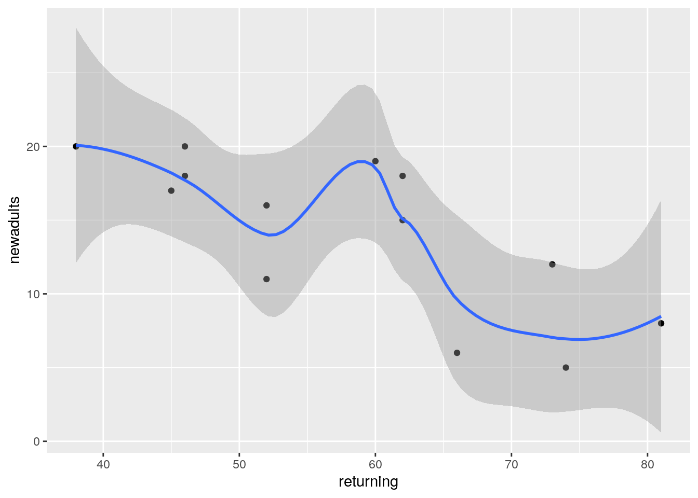
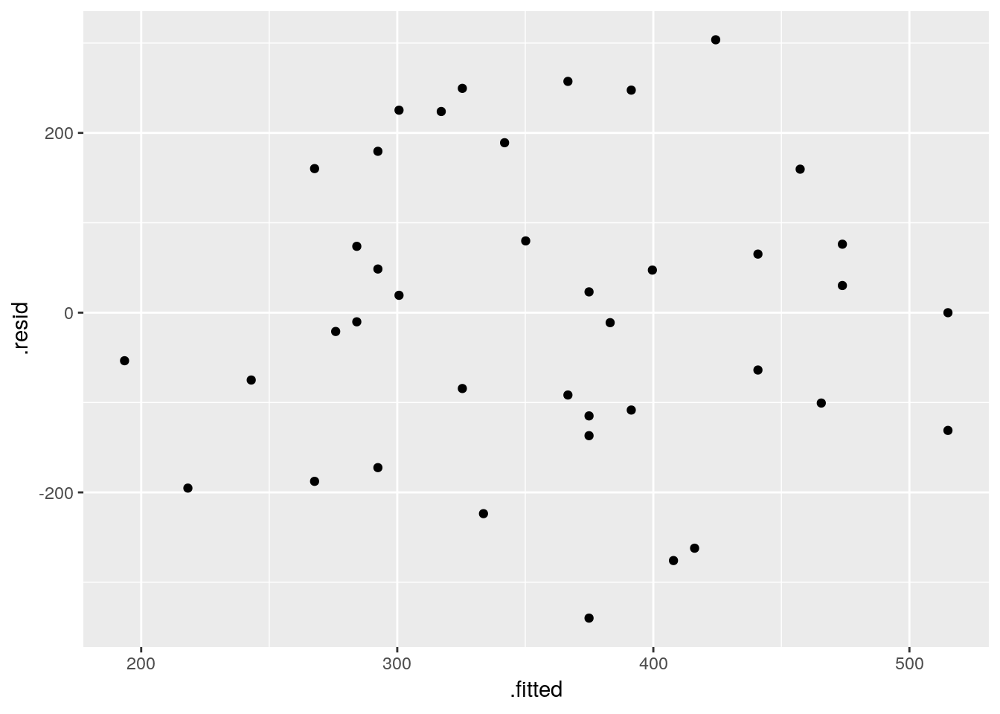
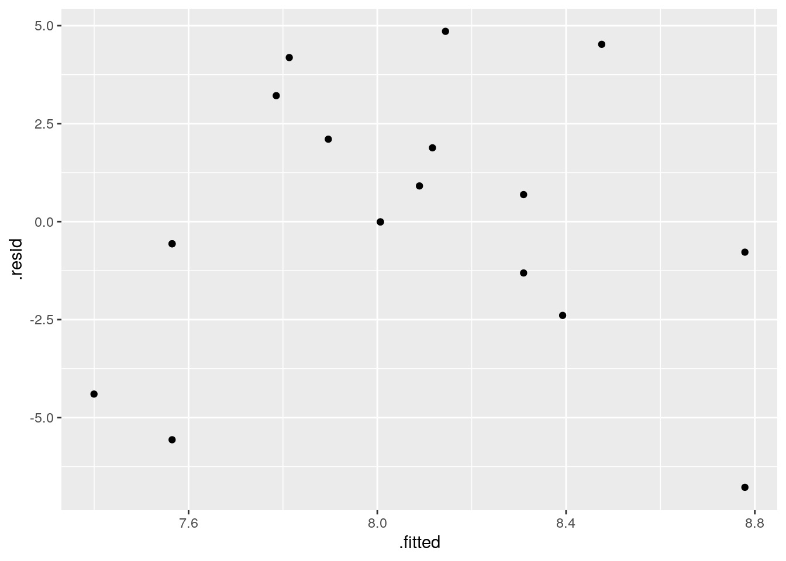

Chapter 13 Regression
## ── Attaching packages ────────────────────────────────── tidyverse 1.2.1 ──## ✔ ggplot2 3.0.0 ✔ purrr 0.2.5
## ✔ tibble 1.4.2 ✔ dplyr 0.7.6
## ✔ tidyr 0.8.1 ✔ stringr 1.3.1
## ✔ readr 1.1.1 ✔ forcats 0.3.0## ── Conflicts ───────────────────────────────────── tidyverse_conflicts() ──
## ✖ dplyr::filter() masks stats::filter()
## ✖ dplyr::lag() masks stats::lag()13.1 Rainfall in California
The data in link are rainfall and other measurements for 30 weather stations in California. Our aim is to understand how well the annual rainfall at these stations (measured in inches) can be predicted from the other measurements, which are the altitude (in feet above sea level), the latitude (degrees north of the equator) and the distance from the coast (in miles).
- Read the data into R. You’ll have to be careful here, since the
values are space-delimited, but sometimes by more than one space, to
make the columns line up.
read_table2, with filename or url, will read it in. One of the variables is calledrainfall, so as long as you do not call the data frame that, you should be safe.
Solution
I used rains as the name of my data frame:
## Parsed with column specification:
## cols(
## station = col_character(),
## rainfall = col_double(),
## altitude = col_integer(),
## latitude = col_double(),
## fromcoast = col_integer()
## )I have the right number of rows and columns.
There is also read_table, but that requires all the
columns, including the header row, to be lined up. You can try that
here and see how it fails.
I don’t need you to investigate the data yet (that happens in the next part), but this is interesting (to me):
## # A tibble: 30 x 5
## station rainfall altitude latitude fromcoast
## <chr> <dbl> <int> <dbl> <int>
## 1 Eureka 39.6 43 40.8 1
## 2 RedBluff 23.3 341 40.2 97
## 3 Thermal 18.2 4152 33.8 70
## 4 FortBragg 37.5 74 39.4 1
## 5 SodaSprings 49.3 6752 39.3 150
## 6 SanFrancisco 21.8 52 37.8 5
## 7 Sacramento 18.1 25 38.5 80
## 8 SanJose 14.2 95 37.4 28
## 9 GiantForest 42.6 6360 36.6 145
## 10 Salinas 13.8 74 36.7 12
## # ... with 20 more rowsSome of the station names are two words, but they have been smooshed
into one word, so that read_table2 will recognize them as a
single thing. Someone had already done that for us, so I didn’t even
have to do it myself.
If the station names had been two genuine words, a .csv would
probably have been the best choice (the actual data values being
separated by commas then, and not spaces).
- Make a boxplot of the rainfall figures, and explain why the
values are reasonable. (A rainfall cannot be negative, and it is
unusual for a annual rainfall to exceed 60 inches.) A
ggplotboxplot needs something on the \(x\)-axis: the number 1 will do.
Solution

There is only one rainfall over 60 inches, and the smallest one is close to zero but positive, so that is good.
Another possible plot here is a histogram, since there is only one quantitative variable:

This clearly shows the rainfall value above 60 inches, but some other things are less clear: are those two rainfall values around 50 inches above or below 50, and are those six rainfall values near zero actually above zero? Extra: What stations have those extreme values? Should you wish to find out:
## # A tibble: 1 x 5
## station rainfall altitude latitude fromcoast
## <chr> <dbl> <int> <dbl> <int>
## 1 CrescentCity 74.9 35 41.7 1This is a place right on the Pacific coast, almost up into Oregon (it’s almost the northernmost of all the stations). So it makes sense that it would have a high rainfall, if anywhere does. (If you know anything about rainy places, you’ll probably think of Vancouver and Seattle, in the Pacific Northwest.) Here it is: link. Which station has less than 2 inches of annual rainfall?
## # A tibble: 1 x 5
## station rainfall altitude latitude fromcoast
## <chr> <dbl> <int> <dbl> <int>
## 1 DeathValley 1.66 -178 36.5 194The name of the station is a clue: this one is in the desert. So you’d expect very little rain. Its altitude is negative, so it’s actually below sea level. This is correct. Here is where it is: link.
- Plot
rainfallagainst each of the other quantitative variables (that is, notstation).
Solution
That is, altitude, latitude and
fromcoast. The obvious way to do this (perfectly
acceptable) is one plot at a time:


and finally

You can add a smooth trend to these if you want. Up to you. Just the points is fine with me.
Here is a funky way to get all three plots in one shot:
rains %>% gather(xname,x,altitude:fromcoast) %>%
ggplot(aes(x=x,y=rainfall))+geom_point()+
facet_wrap(~xname,scales="free")
This always seems extraordinarily strange if you haven’t run into it
before. The strategy is to put all the \(x\)-variables you want
to plot into one column and then plot your \(y\) against the
\(x\)-column. A nice side-effect of the way gather works is
that what makes the \(x\)-columns different is that they are
\(x\)-variables with different names, which is exactly what you
want later for the facets. Thus: make a column of all the \(x\)’s glued
together, labelled by which \(x\) they are, then plot \(y\) against \(x\)
but make a different sub-plot or “facet” for each different
\(x\)-name. The last thing is that each \(x\) is measured on a different
scale, and unless we take steps, all the sub-plots will have the
same scale on each axis, which we don’t want.
I’m not sure I like how it came out, with three very tall
plots. facet_wrap can also take an nrow or an
ncol, which tells it how many rows or columns to use for the
display. Here, for example, two columns because I thought three was
too many:
rains %>% gather(xname,x,altitude:fromcoast) %>%
ggplot(aes(x=x,y=rainfall))+geom_point()+
facet_wrap(~xname,scales="free",ncol=2)
Now, the three plots have come out about square, which I like a lot better.
- Look at the relationship of each other variable with
rainfall. Justify the assertion thatlatitudeseems most strongly related withrainfall. Is that relationship positive or negative? linear? Explain briefly.
Solution
Let’s look at the three variables in turn:
altitude: not much of anything. The stations near sea level have rainfall all over the place, though the three highest-altitude stations have the three highest rainfalls apart from Crescent City.latitude: there is a definite upward trend here, in that stations further north (higher latitude) are likely to have a higher rainfall. I’d call this trend linear (or, not obviously curved), though the two most northerly stations have one higher and one much lower rainfall than you’d expect.fromcoast: this is a weak downward trend, though the trend is spoiled by those three stations about 150 miles from the coast that have more than 40 inches of rainfall.
Out of those, only latitude seems to have any meaningful
relationship with rainfall.
- Fit a regression with
rainfallas the response variable, andlatitudeas your explanatory variable. What are the intercept, slope and R-squared values? Is there a significant relationship betweenrainfalland your explanatory variable? What does that mean?
Solution
Save your lm into a
variable, since it will get used again later:
##
## Call:
## lm(formula = rainfall ~ latitude, data = rains)
##
## Residuals:
## Min 1Q Median 3Q Max
## -27.297 -7.956 -2.103 6.082 38.262
##
## Coefficients:
## Estimate Std. Error t value Pr(>|t|)
## (Intercept) -113.3028 35.7210 -3.172 0.00366 **
## latitude 3.5950 0.9623 3.736 0.00085 ***
## ---
## Signif. codes: 0 '***' 0.001 '**' 0.01 '*' 0.05 '.' 0.1 ' ' 1
##
## Residual standard error: 13.82 on 28 degrees of freedom
## Multiple R-squared: 0.3326, Adjusted R-squared: 0.3088
## F-statistic: 13.96 on 1 and 28 DF, p-value: 0.0008495My intercept is \(-113.3\), slope is \(3.6\) and R-squared is \(0.33\) or 33%. (I want you to pull these numbers out of the output and round them off to something sensible.) The slope is significantly nonzero, its P-value being 0.00085: rainfall really does depend on latitude, although not strongly so.
Extra: Of course, I can easily do the others as well, though you don’t have to:
##
## Call:
## lm(formula = rainfall ~ fromcoast, data = rains)
##
## Residuals:
## Min 1Q Median 3Q Max
## -15.240 -9.431 -6.603 2.871 51.147
##
## Coefficients:
## Estimate Std. Error t value Pr(>|t|)
## (Intercept) 23.77306 4.61296 5.154 1.82e-05 ***
## fromcoast -0.05039 0.04431 -1.137 0.265
## ---
## Signif. codes: 0 '***' 0.001 '**' 0.01 '*' 0.05 '.' 0.1 ' ' 1
##
## Residual standard error: 16.54 on 28 degrees of freedom
## Multiple R-squared: 0.04414, Adjusted R-squared: 0.01
## F-statistic: 1.293 on 1 and 28 DF, p-value: 0.2651Here, the intercept is 23.8, the slope is \(-0.05\) and R-squared is a dismal 0.04 (4%). This is a way of seeing that this relationship is really weak, and it doesn’t even have a curve to the trend or anything that would compensate for this. I looked at the scatterplot again and saw that if it were not for the point bottom right which is furthest from the coast and has almost no rainfall, there would be almost no trend at all. The slope here is not significantly different from zero, with a P-value of 0.265.
Finally:
##
## Call:
## lm(formula = rainfall ~ altitude, data = rains)
##
## Residuals:
## Min 1Q Median 3Q Max
## -20.620 -8.479 -2.729 4.555 58.271
##
## Coefficients:
## Estimate Std. Error t value Pr(>|t|)
## (Intercept) 16.514799 3.539141 4.666 6.9e-05 ***
## altitude 0.002394 0.001428 1.676 0.105
## ---
## Signif. codes: 0 '***' 0.001 '**' 0.01 '*' 0.05 '.' 0.1 ' ' 1
##
## Residual standard error: 16.13 on 28 degrees of freedom
## Multiple R-squared: 0.09121, Adjusted R-squared: 0.05875
## F-statistic: 2.81 on 1 and 28 DF, p-value: 0.1048The intercept is 16.5, the slope is 0.002 and the R-squared is 0.09 or 9%, also terrible. The P-value is 0.105, which is not small enough to be significant.
So it looks as if it’s only latitude that
has any impact at all. This is the only explanatory variable with a
significantly nonzero slope. On its own, at least.
- Fit a multiple regression predicting
rainfallfrom all three of the other (quantitative) variables. Display the results. Comment is coming up later.
Solution
This, then:
##
## Call:
## lm(formula = rainfall ~ latitude + altitude + fromcoast, data = rains)
##
## Residuals:
## Min 1Q Median 3Q Max
## -28.722 -5.603 -0.531 3.510 33.317
##
## Coefficients:
## Estimate Std. Error t value Pr(>|t|)
## (Intercept) -1.024e+02 2.921e+01 -3.505 0.001676 **
## latitude 3.451e+00 7.949e-01 4.342 0.000191 ***
## altitude 4.091e-03 1.218e-03 3.358 0.002431 **
## fromcoast -1.429e-01 3.634e-02 -3.931 0.000559 ***
## ---
## Signif. codes: 0 '***' 0.001 '**' 0.01 '*' 0.05 '.' 0.1 ' ' 1
##
## Residual standard error: 11.1 on 26 degrees of freedom
## Multiple R-squared: 0.6003, Adjusted R-squared: 0.5542
## F-statistic: 13.02 on 3 and 26 DF, p-value: 2.205e-05- What is the R-squared for the regression of the last part? How does that compare with the R-squared of your regression in part (e)?
Solution
The R-squared is 0.60 (60%), which is quite a bit bigger than the R-squared of 0.33 (33%) we got back in (e).
- What do you conclude about the importance of the variables that you did not include in your model in (e)? Explain briefly.
Solution
Both variables altitude and fromcoast are
significant in this regression, so they have something to add over and above latitude when it comes to
predicting rainfall, even though (and this seems odd) they have no
apparent relationship with rainfall on their own.
Another way to say this is that the three variables work together
as a team to predict rainfall, and together they do much better
than any one of them can do by themselves.
This also goes to show that the scatterplots we began
with don’t get to the heart of multi-variable relationships,
because they are only looking at the variables two at a time.
- Make a suitable hypothesis test that the variables
altitudeandfromcoastsignificantly improve the prediction ofrainfallover the use oflatitudealone. What do you conclude?
Solution
This calls for anova. Feed this two fitted models,
smaller (fewer explanatory variables) first. The null hypothesis
is that the two models are equally good (so we should go with the
smaller); the alternative is that the larger model is better, so
that the extra complication is worth it:
## Analysis of Variance Table
##
## Model 1: rainfall ~ latitude
## Model 2: rainfall ~ latitude + altitude + fromcoast
## Res.Df RSS Df Sum of Sq F Pr(>F)
## 1 28 5346.8
## 2 26 3202.3 2 2144.5 8.7057 0.001276 **
## ---
## Signif. codes: 0 '***' 0.001 '**' 0.01 '*' 0.05 '.' 0.1 ' ' 1The P-value is small, so we reject the null in favour of the
alternative: the regression with all three explanatory variables fits
better than the one with just latitude, so the bigger model
is the one we should go with.
If you have studied these things: this one is a “multiple-partial \(F\)-test”, for testing the combined significance of more than one \(x\) but less than all the \(x\)’s. If you had just one \(x\), you’d use a \(t\)-test for its slope, and if you were testing all the \(x\)’s, you’d use the global \(F\)-test that appears in the regression output.
13.2 Carbon monoxide in cigarettes
The (US) Federal Trade Commission assesses cigarettes according to their tar, nicotine and carbon monoxide contents. In a particular year, 25 brands were assessed. For each brand, the tar, nicotine and carbon monoxide (all in milligrams) were measured, along with the weight in grams. Our aim is to predict carbon monoxide from any or all of the other variables. The data are in link. These are aligned by column (except for the variable names), with more than one space between each column of data.
- Read the data into R, and check that you have 25 observations and 4 variables.
Solution
This specification calls for read_table2:
## Parsed with column specification:
## cols(
## tar = col_double(),
## nicotine = col_double(),
## weight = col_double(),
## co = col_double()
## )## # A tibble: 25 x 4
## tar nicotine weight co
## <dbl> <dbl> <dbl> <dbl>
## 1 14.1 0.86 0.985 13.6
## 2 16 1.06 1.09 16.6
## 3 29.8 2.03 1.16 23.5
## 4 8 0.67 0.928 10.2
## 5 4.1 0.4 0.946 5.4
## 6 15 1.04 0.888 15
## 7 8.8 0.76 1.03 9
## 8 12.4 0.95 0.922 12.3
## 9 16.6 1.12 0.937 16.3
## 10 14.9 1.02 0.886 15.4
## # ... with 15 more rowsYes, I have 25 observations on 4 variables indeed.
read_delim won’t work (try it and see what happens), because
that would require the values to be separated by exactly one space.
(b)??part:regone?? Run a regression to predict carbon monoxide from the other variables, and obtain a summary of the output.
Solution
The word “summary” is meant to be a big clue that
summary is what you need:
##
## Call:
## lm(formula = co ~ tar + nicotine + weight, data = cigs)
##
## Residuals:
## Min 1Q Median 3Q Max
## -2.89261 -0.78269 0.00428 0.92891 2.45082
##
## Coefficients:
## Estimate Std. Error t value Pr(>|t|)
## (Intercept) 3.2022 3.4618 0.925 0.365464
## tar 0.9626 0.2422 3.974 0.000692 ***
## nicotine -2.6317 3.9006 -0.675 0.507234
## weight -0.1305 3.8853 -0.034 0.973527
## ---
## Signif. codes: 0 '***' 0.001 '**' 0.01 '*' 0.05 '.' 0.1 ' ' 1
##
## Residual standard error: 1.446 on 21 degrees of freedom
## Multiple R-squared: 0.9186, Adjusted R-squared: 0.907
## F-statistic: 78.98 on 3 and 21 DF, p-value: 1.329e-11(c)??part:regtwo?? Which one of your explanatory variables would you remove from this regression? Explain (very) briefly. Go ahead and fit the regression without it, and describe how the change in R-squared from the regression in (??part:regone??) was entirely predictable.
Solution
First, the \(x\)-variable to remove. The obvious candidate is
weight, since it has easily the highest, and clearly
non-significant, P-value. So, out it comes:
##
## Call:
## lm(formula = co ~ tar + nicotine, data = cigs)
##
## Residuals:
## Min 1Q Median 3Q Max
## -2.89941 -0.78470 -0.00144 0.91585 2.43064
##
## Coefficients:
## Estimate Std. Error t value Pr(>|t|)
## (Intercept) 3.0896 0.8438 3.662 0.001371 **
## tar 0.9625 0.2367 4.067 0.000512 ***
## nicotine -2.6463 3.7872 -0.699 0.492035
## ---
## Signif. codes: 0 '***' 0.001 '**' 0.01 '*' 0.05 '.' 0.1 ' ' 1
##
## Residual standard error: 1.413 on 22 degrees of freedom
## Multiple R-squared: 0.9186, Adjusted R-squared: 0.9112
## F-statistic: 124.1 on 2 and 22 DF, p-value: 1.042e-12R-squared has dropped from 0.9186 to 0.9186! That is, taking
out weight has not just had a minimal effect on R-squared;
it’s not changed R-squared at all. This is because weight was
so far from being significant: it literally had nothing to add.
Another way of achieving the same thing is via the function
update, which takes a fitted model object and describes the
change that you want to make:
##
## Call:
## lm(formula = co ~ tar + nicotine, data = cigs)
##
## Residuals:
## Min 1Q Median 3Q Max
## -2.89941 -0.78470 -0.00144 0.91585 2.43064
##
## Coefficients:
## Estimate Std. Error t value Pr(>|t|)
## (Intercept) 3.0896 0.8438 3.662 0.001371 **
## tar 0.9625 0.2367 4.067 0.000512 ***
## nicotine -2.6463 3.7872 -0.699 0.492035
## ---
## Signif. codes: 0 '***' 0.001 '**' 0.01 '*' 0.05 '.' 0.1 ' ' 1
##
## Residual standard error: 1.413 on 22 degrees of freedom
## Multiple R-squared: 0.9186, Adjusted R-squared: 0.9112
## F-statistic: 124.1 on 2 and 22 DF, p-value: 1.042e-12This can be shorter than describing the whole model again, as you do
with the cigs.2 version of lm. The syntax is that
you first specify a “base” fitted model object that you’re going to
update. Because the model cigs.1 contains all the information
about the kind of model it is, and which data frame the data come
from, R already knows that this is a linear
multiple regression and which \(x\)’s it contains. The second thing to describe is the change from
the “base”. In this case, we want to use the same response variable
and all the same explanatory variables that we had before, except for
weight. This is specified by a special kind of model formula
where . means “whatever was there before”: in English,
“same response and same explanatories except take out weight”.
(d)??part:regthree?? Fit a regression predicting carbon monoxide from
nicotine only, and display the summary.
Solution
As you would guess:
##
## Call:
## lm(formula = co ~ nicotine, data = cigs)
##
## Residuals:
## Min 1Q Median 3Q Max
## -3.3273 -1.2228 0.2304 1.2700 3.9357
##
## Coefficients:
## Estimate Std. Error t value Pr(>|t|)
## (Intercept) 1.6647 0.9936 1.675 0.107
## nicotine 12.3954 1.0542 11.759 3.31e-11 ***
## ---
## Signif. codes: 0 '***' 0.001 '**' 0.01 '*' 0.05 '.' 0.1 ' ' 1
##
## Residual standard error: 1.828 on 23 degrees of freedom
## Multiple R-squared: 0.8574, Adjusted R-squared: 0.8512
## F-statistic: 138.3 on 1 and 23 DF, p-value: 3.312e-11nicotinewas far from being significant in the model of (??part:regtwo??), and yet in the model of (??part:regthree??), it was strongly significant, and the R-squared value of (??part:regthree??) was almost as high as that of (??part:regtwo??). What does this say about the importance ofnicotineas an explanatory variable? Explain, as briefly as you can manage.
Solution
What this says is that you cannot say anything about the
“importance” of nicotine without also describing the
context that you’re talking about. By itself,
nicotine is important, but , nicotine is not
important: precisely, it now has nothing to add over and above
the predictive value that tar has. You might guess that
this is because tar and nicotine are ``saying
the same thing’’ in some fashion. We’ll explore that in a moment.
- Make a “pairs plot”: that is, scatter plots between all
pairs of variables. This can be done by feeding the whole data frame
into
plot. Do you see any strong relationships that do not includeco? Does that shed any light on the last part? Explain briefly (or “at length” if that’s how it comes out).
Solution
Plot the entire data frame:

We’re supposed to ignore co, but I comment that strong
relationships between co and both of tar and
nicotine show up here, along with weight being
at most weakly related to anything else.
That leaves the relationship of tar and nicotine
with each other. That also looks like a strong linear trend. When you
have correlations between explanatory variables, it is called
“multicollinearity”.
I mentioned a while back (in class) that having correlated \(x\)’s was
trouble. Here is where we find out why. The problem is that when
co is large, nicotine is large, and a large value of
tar will come along with it. So we don’t know whether a large
value of co is caused by a large value of tar or a
large value of nicotine: there is no way to separate out
their effects because in effect they are “glued together”.
You might know of this effect (in an experimental design context) as
“confounding”: the effect of tar on co is
confounded with the effect of nicotine on co, and
you can’t tell which one deserves the credit for predicting co.
If you were able to design an experiment here, you could (in
principle) manufacture a bunch of cigarettes with high tar; some of
them would have high nicotine and some would have low. Likewise for
low tar. Then the
correlation between nicotine and tar would go away,
their effects on co would no longer be confounded, and you
could see unambiguously which one of the variables deserves credit for
predicting co. Or maybe it depends on both, genuinely, but at
least then you’d know.
We, however, have an observational study, so we have to make do with the data we have. Confounding is one of the risks we take when we work with observational data.
This was a “base graphics” plot. There is a way of doing a
ggplot-style “pairs plot”, as this is called, thus:
##
## Attaching package: 'GGally'## The following object is masked from 'package:dplyr':
##
## nasa
As ever, install.packages first, in the likely event that you
don’t have this package installed yet. Once you do, though, I think
this is a nicer way to get a pairs plot.
This plot is a bit more sophisticated: instead of just having the
scatterplots of the pairs of variables in the row and column, it uses
the diagonal to show a “kernel density” (a smoothed-out histogram),
and upper-right it shows the correlation between each pair of
variables. The three correlations between co, tar
and nicotine are clearly the highest.
If you want only some of the columns to appear in your pairs plot,
select them first, and then pass that data frame into
ggpairs. Here, we found that weight was not
correlated with anything much, so we can take it out and then make a
pairs plot of the other variables:

The three correlations that remain are all very high, which is entirely consistent with the strong linear relationships that you see bottom left.
13.3 Maximal oxygen uptake in young boys
A physiologist wanted to understand the relationship between physical characteristics of pre-adolescent boys and their maximal oxygen uptake (millilitres of oxygen per kilogram of body weight). The data are in link for a random sample of 10 pre-adolescent boys. The variables are (with units):
uptake: Oxygen uptake (millitres of oxygen per kilogram of body weight)age: boy’s age (years)height: boy’s height (cm)weight: boy’s weight (kg)chest: chest depth (cm).
- Read the data into R and confirm that you do indeed have 10 observations.
Solution
## Parsed with column specification:
## cols(
## uptake = col_double(),
## age = col_double(),
## height = col_double(),
## weight = col_double(),
## chest = col_double()
## )## # A tibble: 10 x 5
## uptake age height weight chest
## <dbl> <dbl> <dbl> <dbl> <dbl>
## 1 1.54 8.4 132 29.1 14.4
## 2 1.74 8.7 136. 29.7 14.5
## 3 1.32 8.9 128. 28.4 14
## 4 1.5 9.9 131. 28.8 14.2
## 5 1.46 9 130 25.9 13.6
## 6 1.35 7.7 128. 27.6 13.9
## 7 1.53 7.3 130. 29 14
## 8 1.71 9.9 138. 33.6 14.6
## 9 1.27 9.3 127. 27.7 13.9
## 10 1.5 8.1 132. 30.8 14.510 boys (rows) indeed.
- Fit a regression predicting oxygen uptake from all the other variables, and display the results.
Solution
Fitting four explanatory variables with only ten observations is likely to be pretty shaky, but we press ahead regardless:
##
## Call:
## lm(formula = uptake ~ age + height + weight + chest, data = boys)
##
## Residuals:
## 1 2 3 4 5 6 7
## -0.020697 0.019741 -0.003649 0.038470 -0.023639 -0.026026 0.050459
## 8 9 10
## -0.014380 0.004294 -0.024573
##
## Coefficients:
## Estimate Std. Error t value Pr(>|t|)
## (Intercept) -4.774739 0.862818 -5.534 0.002643 **
## age -0.035214 0.015386 -2.289 0.070769 .
## height 0.051637 0.006215 8.308 0.000413 ***
## weight -0.023417 0.013428 -1.744 0.141640
## chest 0.034489 0.085239 0.405 0.702490
## ---
## Signif. codes: 0 '***' 0.001 '**' 0.01 '*' 0.05 '.' 0.1 ' ' 1
##
## Residual standard error: 0.03721 on 5 degrees of freedom
## Multiple R-squared: 0.9675, Adjusted R-squared: 0.9415
## F-statistic: 37.2 on 4 and 5 DF, p-value: 0.0006513- (A one-mark question.) Would you say, on the evidence so far, that the regression fits well or badly? Explain (very) briefly.
Solution
R-squared of 0.97 (97%) is very high, so I’d say this regression fits very well. That’s all. I said “on the evidence so far” to dissuade you from overthinking this, or thinking that you needed to produce some more evidence. That, plus the fact that this was only one mark.
- It seems reasonable that an older boy should have a greater oxygen uptake, all else being equal. Is this supported by your output? Explain briefly.
Solution
If an older boy has greater oxygen uptake (the “all else equal” was a hint),
the slope of age should be
positive. It is not: it is \(-0.035\), so it is suggesting
(all else equal) that a greater age goes with a
smaller oxygen uptake.
The reason why this happens (which you didn’t need, but
you can include it if you like) is that age has a
non-small P-value of 0.07, so that the age slope
is not significantly different from zero. With all the
other variables, age has nothing to add
over and above them, and we could therefore remove it.
- It seems reasonable that a boy with larger weight should have larger lungs and thus a larger oxygen uptake. Is that what happens here? Explain briefly.
Solution
Look at the P-value for weight. This is 0.14,
not small, and so a boy with larger weight does not have
a significantly larger oxygen uptake, all else
equal. (The slope for weight is not
significantly different from zero either.)
I emphasized “statistically significant” to remind you
that this means to do a test and get a P-value.
- Fit a model that contains only the significant explanatory variables from your first regression. How do the R-squared values from the two regressions compare? (The last sentence asks for more or less the same thing as the next part. Answer it either here or there. Either place is good.)
Solution
Only height is significant, so that’s the
only explanatory variable we need to keep. I would
just do the regression straight rather than using
update here:
##
## Call:
## lm(formula = uptake ~ height, data = boys)
##
## Residuals:
## Min 1Q Median 3Q Max
## -0.069879 -0.033144 0.001407 0.009581 0.084012
##
## Coefficients:
## Estimate Std. Error t value Pr(>|t|)
## (Intercept) -3.843326 0.609198 -6.309 0.000231 ***
## height 0.040718 0.004648 8.761 2.26e-05 ***
## ---
## Signif. codes: 0 '***' 0.001 '**' 0.01 '*' 0.05 '.' 0.1 ' ' 1
##
## Residual standard error: 0.05013 on 8 degrees of freedom
## Multiple R-squared: 0.9056, Adjusted R-squared: 0.8938
## F-statistic: 76.75 on 1 and 8 DF, p-value: 2.258e-05If you want, you can use update here, which looks like this:
##
## Call:
## lm(formula = uptake ~ height, data = boys)
##
## Residuals:
## Min 1Q Median 3Q Max
## -0.069879 -0.033144 0.001407 0.009581 0.084012
##
## Coefficients:
## Estimate Std. Error t value Pr(>|t|)
## (Intercept) -3.843326 0.609198 -6.309 0.000231 ***
## height 0.040718 0.004648 8.761 2.26e-05 ***
## ---
## Signif. codes: 0 '***' 0.001 '**' 0.01 '*' 0.05 '.' 0.1 ' ' 1
##
## Residual standard error: 0.05013 on 8 degrees of freedom
## Multiple R-squared: 0.9056, Adjusted R-squared: 0.8938
## F-statistic: 76.75 on 1 and 8 DF, p-value: 2.258e-05This doesn’t go quite so smoothly here because there are three variables being removed, and it’s a bit of work to type them all.
- How has R-squared changed between your two regressions? Describe what you see in a few words.
Solution
R-squared has dropped by a bit, from 97% to 91%. (Make your own call: pull out the two R-squared numbers, and say a word or two about how they compare. I don’t much mind what you say: “R-squared has decreased (noticeably)”, “R-squared has hardly changed”. But say something.)
- Carry out a test comparing the fit of your two regression models. What do you conclude, and therefore what recommendation would you make about the regression that would be preferred?
Solution
The word “test” again implies something that produces a P-value with a
null hypothesis that you might reject. In this case, the test that
compares two models differing by more than one \(x\) uses
anova, testing the null hypothesis that the two regressions
are equally good, against the alternative that the bigger (first) one
is better. Feed anova two fitted model objects, smaller first:
## Analysis of Variance Table
##
## Model 1: uptake ~ height
## Model 2: uptake ~ age + height + weight + chest
## Res.Df RSS Df Sum of Sq F Pr(>F)
## 1 8 0.0201016
## 2 5 0.0069226 3 0.013179 3.1729 0.123This P-value of 0.123 is not small, so we do not reject the null
hypothesis. There is not a significant difference in fit between the
two models. Therefore, we should go with the smaller model
boys.2 because it is simpler.
That drop in R-squared from 97% to 91% was, it turns out, not significant: the three extra variables could have produced a change in R-squared like that, even if they were worthless. Recall that adding \(x\)’s to a regression will always make R-squared go up, even if they are just random noise.
If you have learned about “adjusted R-squared”, you might recall
that this is supposed to go down only if the variables you took
out should not have been taken out. But adjusted R-squared goes down
here as well, from 94% to 89% (not quite as much, therefore). What
happens is that adjusted R-squared is rather more relaxed about
keeping variables than the anova \(F\)-test is; if we had used
an \(\alpha\) of something like 0.10, the decision between the two
models would have been a lot closer, and this is reflected in the
adjusted R-squared values.
- Obtain a table of correlations between all
the variables in the data frame. Do this by feeding
the whole data frame into
cor. We found that a regression predicting oxygen uptake from justheightwas acceptably good. What does your table of correlations say about why that is? (Hint: look for all the correlations that are large.)
Solution
Correlations first:
## uptake age height weight chest
## uptake 1.0000000 0.1361907 0.9516347 0.6576883 0.7182659
## age 0.1361907 1.0000000 0.3274830 0.2307403 0.1657523
## height 0.9516347 0.3274830 1.0000000 0.7898252 0.7909452
## weight 0.6576883 0.2307403 0.7898252 1.0000000 0.8809605
## chest 0.7182659 0.1657523 0.7909452 0.8809605 1.0000000The correlations with age are all on the low side, but all
the other correlations are high, not just between uptake and the
other variables, but between the explanatory variables as well.
Why is this helpful in understanding what’s going on? Well, imagine a
boy with large height (a tall one). The regression boys.2
says that this alone is enough to predict that such a boy’s oxygen
uptake is likely to be large, since the slope is positive. But the
correlations tell you more: a boy with large height is also (somewhat)
likely to be older (have large age), heavier (large weight) and to have
larger chest cavity. So oxygen uptake does depend on those other
variables as well, but once you know height you can make a
good guess at their values; you don’t need to know them.
Further remarks: age has a low correlation with
uptake, so its non-significance earlier appears to be
“real”: it really does have nothing extra to say, because the other
variables have a stronger link with uptake than
age. Height, however, seems to be the best way of relating
oxygen uptake to any of the other variables. I think the suppositions
from earlier about relating oxygen uptake to “bigness” in some sense
are actually sound, but age and weight and chest capture
“bigness” worse than height does. Later, when you learn about
Principal Components, you will see that the first principal component,
the one that best captures how the variables vary together, is often
“bigness” in some sense.
Another way to think about these things is via pairwise
scatterplots. The nicest way to produce these is via ggpairs
from package ggally:

A final remark: with five variables, we really ought to have more than ten observations (something like 50 would be better). But with more observations and the same correlation structure, the same issues would come up again, so the question would not be materially changed.
13.4 Mating songs in crickets
Male tree crickets produce “mating songs” by rubbing their wings together to produce a chirping sound. It is hypothesized that female tree crickets identify males of the correct species by how fast (in chirps per second) the male’s mating song is. This is called the “pulse rate”. Some data for two species of crickets are in link. The columns, which are unlabelled, are temperature and pulse rate (respectively) for Oecanthus exclamationis (first two columns) and Oecanthus niveus (third and fourth columns). The columns are separated by tabs. There are some missing values in the first two columns because fewer exclamationis crickets than niveus crickets were measured. The research question is whether males of the different species have different average pulse rates. It is also of interest to see whether temperature has an effect, and if so, what.
- Read in the data, allowing for the fact that you have no
column names. You’ll see that the
columns have names
X1throughX4. This is OK.
Solution
Tab-separated, so read_tsv; no column names, so col_names=F:
## Parsed with column specification:
## cols(
## X1 = col_double(),
## X2 = col_double(),
## X3 = col_double(),
## X4 = col_double()
## )## # A tibble: 17 x 4
## X1 X2 X3 X4
## <dbl> <dbl> <dbl> <dbl>
## 1 20.8 67.9 17.2 44.3
## 2 20.8 65.1 18.3 47.2
## 3 24 77.3 18.3 47.6
## 4 24 78.7 18.3 49.6
## 5 24 79.4 18.9 50.3
## 6 24 80.4 18.9 51.8
## 7 26.2 85.8 20.4 60
## 8 26.2 86.6 21 58.5
## 9 26.2 87.5 21 58.9
## 10 26.2 89.1 22.1 60.7
## 11 28.4 98.6 23.5 69.8
## 12 29 101. 24.2 70.9
## 13 30.4 99.3 25.9 76.2
## 14 30.4 102. 26.5 76.1
## 15 NA NA 26.5 77
## 16 NA NA 26.5 77.7
## 17 NA NA 28.6 84.7As promised.
If you didn’t catch the tab-separated part, this probably happened to you:
## Parsed with column specification:
## cols(
## X1 = col_character()
## )## Warning in rbind(names(probs), probs_f): number of columns of result is not
## a multiple of vector length (arg 1)## Warning: 3 parsing failures.
## row # A tibble: 3 x 5 col row col expected actual file expected <int> <chr> <chr> <chr> <chr> actual 1 15 <NA> 1 columns 2 colum… 'http://www.utsc.utoronto.ca/~butler/c32… file 2 16 <NA> 1 columns 2 colum… 'http://www.utsc.utoronto.ca/~butler/c32… row 3 17 <NA> 1 columns 2 colum… 'http://www.utsc.utoronto.ca/~butler/c32…This doesn’t look good:
## # A tibble: 3 x 5
## row col expected actual file
## <int> <chr> <chr> <chr> <chr>
## 1 15 <NA> 1 columns 2 colum… 'http://www.utsc.utoronto.ca/~butler/c32…
## 2 16 <NA> 1 columns 2 colum… 'http://www.utsc.utoronto.ca/~butler/c32…
## 3 17 <NA> 1 columns 2 colum… 'http://www.utsc.utoronto.ca/~butler/c32…The “expected columns” being 1 should bother you, since we know there are supposed to be 4 columns. At this point, we take a look at what got read in:
## # A tibble: 17 x 1
## X1
## <chr>
## 1 "20.8\t67.9\t17.2\t44.3"
## 2 "20.8\t65.1\t18.3\t47.2"
## 3 "24.0\t77.3\t18.3\t47.6"
## 4 "24.0\t78.7\t18.3\t49.6"
## 5 "24.0\t79.4\t18.9\t50.3"
## 6 "24.0\t80.4\t18.9\t51.8"
## 7 "26.2\t85.8\t20.4\t60.0"
## 8 "26.2\t86.6\t21.0\t58.5"
## 9 "26.2\t87.5\t21.0\t58.9"
## 10 "26.2\t89.1\t22.1\t60.7"
## 11 "28.4\t98.6\t23.5\t69.8"
## 12 "29.0\t100.8\t24.2\t70.9"
## 13 "30.4\t99.3\t25.9\t76.2"
## 14 "30.4\t101.7\t26.5\t76.1"
## 15 "NA\tNA"
## 16 "NA\tNA"
## 17 "NA\tNA"and there you see the t or “tab” characters separating the
values, instead of spaces. (This is what I tried first, and once I
looked at this, I realized that read_tsv was what I needed.)
- These data are rather far from being tidy. There need to be
three variables, temperature, pulse rate and species, and there
are \(14+17=31\) observations altogether. This one is tricky in that
there are temperature and pulse rate for each of two levels of a
factor, so I’ll suggest combining the temperature and chirp rate
together into one thing for each species, then gathering them,
then splitting them again. Create new columns, named for each species,
that contain the temperature and pulse rate for that species in
that order,
united together. For the rest of this question, start from the data frame you read in, and build a pipe, one or two steps at a time, to save creating a lot of temporary data frames.
Solution
Breathe, and then begin. unite creates new columns by
joining together old ones:
As str_c or paste do, actually, but the advantage of unite is that it gets rid of the other columns, which you probably no longer need.
## # A tibble: 17 x 2
## exclamationis niveus
## <chr> <chr>
## 1 20.8_67.9 17.2_44.3
## 2 20.8_65.1 18.3_47.2
## 3 24_77.3 18.3_47.6
## 4 24_78.7 18.3_49.6
## 5 24_79.4 18.9_50.3
## 6 24_80.4 18.9_51.8
## 7 26.2_85.8 20.4_60
## 8 26.2_86.6 21_58.5
## 9 26.2_87.5 21_58.9
## 10 26.2_89.1 22.1_60.7
## 11 28.4_98.6 23.5_69.8
## 12 29_100.8 24.2_70.9
## 13 30.4_99.3 25.9_76.2
## 14 30.4_101.7 26.5_76.1
## 15 NA_NA 26.5_77
## 16 NA_NA 26.5_77.7
## 17 NA_NA 28.6_84.7Note that the original columns X1:X4 are gone, which
is fine, because the information we needed from them is contained in
the two new columns. unite by default uses an underscore to
separate the joined-together values, which is generally safe since you
won’t often find those in data.
Digression: unite-ing with a space could cause problems if
the data values have spaces in them already. Consider this list of names:
Two very former students of mine, a Norwegian soccer player, and a Bangladeshi cricketer. Only one of these has played for Manchester United:
and let’s make a data frame:
## # A tibble: 4 x 2
## name manu
## <chr> <lgl>
## 1 Cameron McDonald FALSE
## 2 Durwin Yang FALSE
## 3 Ole Gunnar Solskjaer TRUE
## 4 Mahmudullah FALSENow, what happens if we unite those columns, separating them
by a space?
## # A tibble: 4 x 1
## joined
## <chr>
## 1 Cameron McDonald FALSE
## 2 Durwin Yang FALSE
## 3 Ole Gunnar Solskjaer TRUE
## 4 Mahmudullah FALSEIf we then try to separate them again, what happens?
## Warning: Expected 2 pieces. Additional pieces discarded in 3 rows [1, 2,
## 3].## # A tibble: 4 x 2
## one two
## <chr> <chr>
## 1 Cameron McDonald
## 2 Durwin Yang
## 3 Ole Gunnar
## 4 Mahmudullah FALSEThings have gotten lost: most of the original values of manu
and some of the names. If we use a different separator character,
either choosing one deliberately or going with the default underscore,
everything works swimmingly:
## # A tibble: 4 x 2
## one two
## <chr> <chr>
## 1 Cameron McDonald FALSE
## 2 Durwin Yang FALSE
## 3 Ole Gunnar Solskjaer TRUE
## 4 Mahmudullah FALSEand we are back to where we started.
If you run just the unite line (move the pipe symbol to the
next line so that the unite line is complete as it stands),
you’ll see what happened.
- The two columns
exclamationisandniveusthat you just created are both temperature-pulse rate combos, but for different species.gatherthem together into one column, labelled by species. (This is a straighttidyrgather, even though they contain something odd-looking.)
Solution
Thus, this, naming the new column temp_pulse since it
contains both of those things. Add to the end of the pipe you
started building in the previous part:
crickets %>%
unite(exclamationis,X1:X2) %>%
unite(niveus,X3:X4) %>%
gather(species,temp_pulse,exclamationis:niveus) ## # A tibble: 34 x 2
## species temp_pulse
## <chr> <chr>
## 1 exclamationis 20.8_67.9
## 2 exclamationis 20.8_65.1
## 3 exclamationis 24_77.3
## 4 exclamationis 24_78.7
## 5 exclamationis 24_79.4
## 6 exclamationis 24_80.4
## 7 exclamationis 26.2_85.8
## 8 exclamationis 26.2_86.6
## 9 exclamationis 26.2_87.5
## 10 exclamationis 26.2_89.1
## # ... with 24 more rowsYep. If you scroll down with Next, you’ll see the other species of
crickets, and you’ll see some missing values at the bottom, labelled,
at the moment, NA_NA.
This is going to get rather long, but don’t fret: we debugged the two
unite lines before, so if you get any errors, they must
have come from the gather. So that would be the place to check.
- Now split up the temperature-pulse combos at the underscore, into
two separate columns. This is
separate. When specifying what to separate by, you can use a number (“split after this many characters”) or a piece of text, in quotes (“when you see this text, split at it”).
Solution
The text to split by is an underscore (in quotes), since
unite by default puts an underscore in between the
values it pastes together. Glue the separate onto the
end. We are creating two new variables temperature and
pulse_rate:
crickets %>%
unite(exclamationis,X1:X2) %>%
unite(niveus,X3:X4) %>%
gather(species,temp_pulse,exclamationis:niveus) %>%
separate(temp_pulse,c("temperature","pulse_rate"),"_")## # A tibble: 34 x 3
## species temperature pulse_rate
## <chr> <chr> <chr>
## 1 exclamationis 20.8 67.9
## 2 exclamationis 20.8 65.1
## 3 exclamationis 24 77.3
## 4 exclamationis 24 78.7
## 5 exclamationis 24 79.4
## 6 exclamationis 24 80.4
## 7 exclamationis 26.2 85.8
## 8 exclamationis 26.2 86.6
## 9 exclamationis 26.2 87.5
## 10 exclamationis 26.2 89.1
## # ... with 24 more rowsYou’ll note that unite and separate are opposites (“inverses”) of each other, but we haven’t just done something and then undone it, because we have a gather in between; in fact, arranging it this way has done precisely the tidying we wanted.
- Almost there. Temperature and pulse rate are still text
(because
uniteturned them into text), but they should be numbers. Create new variables that are numerical versions of temperature and pulse rate (usingas.numeric). Check that you have no extraneous variables (and, if necessary, get rid of the ones you don’t want). (Species is also text and really ought to be a factor, but having it as text doesn’t seem to cause any problems.) You can, if you like, useparse_numberinstead ofas.numeric. They should both work. The distinction I prefer to make is thatparse_numberis good for text with a number in it (that we want to pull the number out of), whileas.numericis for turning something that looks like a number but isn’t one into a genuine number.
Solution
mutate-ing into a column that already exists overwrites
the variable that’s already there (which saves us some effort
here).
crickets.1 = crickets %>%
unite(exclamationis,X1:X2) %>%
unite(niveus,X3:X4) %>%
gather(species,temp_pulse,exclamationis:niveus) %>%
separate(temp_pulse,c("temperature","pulse_rate"),"_") %>%
mutate(temperature=as.numeric(temperature)) %>%
mutate(pulse_rate=as.numeric(pulse_rate))## Warning in evalq(as.numeric(temperature), <environment>): NAs introduced by
## coercion## Warning in evalq(as.numeric(pulse_rate), <environment>): NAs introduced by
## coercion## # A tibble: 34 x 3
## species temperature pulse_rate
## <chr> <dbl> <dbl>
## 1 exclamationis 20.8 67.9
## 2 exclamationis 20.8 65.1
## 3 exclamationis 24 77.3
## 4 exclamationis 24 78.7
## 5 exclamationis 24 79.4
## 6 exclamationis 24 80.4
## 7 exclamationis 26.2 85.8
## 8 exclamationis 26.2 86.6
## 9 exclamationis 26.2 87.5
## 10 exclamationis 26.2 89.1
## # ... with 24 more rowsI saved the data frame this time, since this is the one we will use for our analysis.
The warning message tells us that we got genuine missing-value NAs back, which is probably what we want. Specifically, they got turned from missing text to missing numbers! You might think that missing is just missing, but R distinguishes between types of missing. The R word “coercion” means values being changed from one type of thing to another type of thing. (We’ll ignore the missings and see if they cause us any trouble. The same warning messages will show up on graphs later.) So I have 34 rows (including three rows of missings) instead of the 31 rows I would have liked. Otherwise, success.
There is (inevitably) another way to do this. We are doing the
as.numeric twice, exactly the same on two different columns,
and when you are doing the same thing on a number of columns, here a
mutate with the same function, you have the option of using
mutate_if or mutate_at. These are like
summarize_if and summarize_at that we used way
back to compute numerical summaries of a bunch of columns: the
if variant works on columns that share a property, like being
numeric, and the at variant works on columns whose names have
something in common or that we can list, which is what we want here:
crickets %>%
unite(exclamationis,X1:X2) %>%
unite(niveus,X3:X4) %>%
gather(species,temp_pulse,exclamationis:niveus) %>%
separate(temp_pulse,c("temperature","pulse_rate"),"_") %>%
mutate_at(vars(temperature:pulse_rate),funs(as.numeric))## Warning in evalq(as.numeric(temperature), <environment>): NAs introduced by
## coercion## Warning in evalq(as.numeric(pulse_rate), <environment>): NAs introduced by
## coercion## # A tibble: 34 x 3
## species temperature pulse_rate
## <chr> <dbl> <dbl>
## 1 exclamationis 20.8 67.9
## 2 exclamationis 20.8 65.1
## 3 exclamationis 24 77.3
## 4 exclamationis 24 78.7
## 5 exclamationis 24 79.4
## 6 exclamationis 24 80.4
## 7 exclamationis 26.2 85.8
## 8 exclamationis 26.2 86.6
## 9 exclamationis 26.2 87.5
## 10 exclamationis 26.2 89.1
## # ... with 24 more rowsCan’t I just say that these are columns 2 and 3?
crickets %>%
unite(exclamationis,X1:X2) %>%
unite(niveus,X3:X4) %>%
gather(species,temp_pulse,exclamationis:niveus) %>%
separate(temp_pulse,c("temperature","pulse_rate"),"_") %>%
mutate_at(vars(2:3),funs(as.numeric))## Warning in evalq(as.numeric(temperature), <environment>): NAs introduced by
## coercion## Warning in evalq(as.numeric(pulse_rate), <environment>): NAs introduced by
## coercion## # A tibble: 34 x 3
## species temperature pulse_rate
## <chr> <dbl> <dbl>
## 1 exclamationis 20.8 67.9
## 2 exclamationis 20.8 65.1
## 3 exclamationis 24 77.3
## 4 exclamationis 24 78.7
## 5 exclamationis 24 79.4
## 6 exclamationis 24 80.4
## 7 exclamationis 26.2 85.8
## 8 exclamationis 26.2 86.6
## 9 exclamationis 26.2 87.5
## 10 exclamationis 26.2 89.1
## # ... with 24 more rowsYes. Equally good. What goes into the vars
is the same as can go into a select: column numbers, names,
or any of those “select helpers” like starts_with.
You might think of mutate_if here, but if you scroll back, you’ll find that all the columns are text, before you convert temperature and pulse rate to numbers, and so there’s no way to pick out just the two columns you want that way.
Check that the temperature and pulse rate columns are now labelled
dbl, which means they actually are decimal numbers
(and don’t just look like decimal numbers).
Either way, using unite and then separate means that
all the columns we created we want to keep (or, all the ones we would
have wanted to get rid of have already been gotten rid of).
Now we can actually do some statistics.
- Do a two-sample \(t\)-test to see whether the mean pulse rates differ between species. What do you conclude?
Solution
Drag your mind way back to this:
##
## Welch Two Sample t-test
##
## data: pulse_rate by species
## t = 5.2236, df = 28.719, p-value = 1.401e-05
## alternative hypothesis: true difference in means is not equal to 0
## 95 percent confidence interval:
## 14.08583 32.22677
## sample estimates:
## mean in group exclamationis mean in group niveus
## 85.58571 62.42941There is strong evidence of a difference in means (a P-value around 0.00001), and the confidence interval says that the mean chirp rate is higher for exclamationis. That is, not just for the crickets that were observed here, but for all crickets of these two species.
- The analysis in the last part did not use temperature, however. Is it possible that temperature also has an effect? To assess this, draw a scatterplot of pulse rate against temperature, with the points distinguished, somehow, by the species they are from.
Solution
One of the wonderful things about ggplot is that doing
the obvious thing works:
## Warning: Removed 3 rows containing missing values (geom_point).
- What does the plot tell you that the \(t\)-test doesn’t? How would you describe differences in pulse rates between species now?
Solution
The plot tells you that (for both species) as temperature goes up, pulse rate goes up as well. Allowing for that, the difference in pulse rates between the two species is even clearer than it was before. To see an example, pick a temperature, and note that the mean pulse rate at that temperature seems to be at least 10 higher for exclamationis, with a high degree of consistency. The \(t\)-test mixed up all the pulse rates at all the different temperatures. Even though the conclusion was clear enough, it could be clearer if we incorporated temperature into the analysis. There was also a potential source of unfairness in that the exclamationis crickets tended to be observed at higher temperatures than niveus crickets; since pulse rates increase with temperature, the apparent difference in pulse rates between the species might have been explainable by one species being observed mainly in higher temperatures. This was utterly invisible to us when we did the \(t\)-test, but it shows the importance of accounting for all the relevant variables when you do your analysis. If the species had been observed at opposite temperatures, we might have concluded Mistakenly. that niveus have the higher pulse rates on average. I come back to this later when I discuss the confidence interval for species difference that comes out of the regression model with temperature.
- Fit a regression predicting pulse rate from species and temperature. Compare the P-value for species in this regression to the one from the \(t\)-test. What does that tell you?
Solution
This is actually a so-called “analysis of covariance model”, which properly belongs in D29, but it’s really just a regression:
##
## Call:
## lm(formula = pulse_rate ~ species + temperature, data = crickets.1)
##
## Residuals:
## Min 1Q Median 3Q Max
## -3.0128 -1.1296 -0.3912 0.9650 3.7800
##
## Coefficients:
## Estimate Std. Error t value Pr(>|t|)
## (Intercept) -7.21091 2.55094 -2.827 0.00858 **
## speciesniveus -10.06529 0.73526 -13.689 6.27e-14 ***
## temperature 3.60275 0.09729 37.032 < 2e-16 ***
## ---
## Signif. codes: 0 '***' 0.001 '**' 0.01 '*' 0.05 '.' 0.1 ' ' 1
##
## Residual standard error: 1.786 on 28 degrees of freedom
## (3 observations deleted due to missingness)
## Multiple R-squared: 0.9896, Adjusted R-squared: 0.9888
## F-statistic: 1331 on 2 and 28 DF, p-value: < 2.2e-16The P-value for species is now \(6.27\times 10^{-14}\) or 0.00000000000006, which is even less than the P-value of 0.00001 that came out of the \(t\)-test. That is to say, when you know temperature, you can be even more sure of your conclusion that there is a difference between the species.
The R-squared for this regression is almost 99%, which says that if you know both temperature and species, you can predict the pulse rate almost exactly.
In the regression output, the slope for species is about \(-10\). It is
labelled speciesniveus. Since species is categorical,
lm uses the first category, exclamationis, as the
baseline and expresses each other species relative to that. Since the
slope is about \(-10\), it says that at any given temperature, the mean
pulse rate for niveus is about 10 less than for
exclamationis. This is pretty much what the scatterplot told
us.
We can go a little further here:
## 2.5 % 97.5 %
## (Intercept) -12.436265 -1.985547
## speciesniveus -11.571408 -8.559175
## temperature 3.403467 3.802038The second line says that the pulse rate for niveus is between about 8.5 and 11.5 less than for exclamationis, at any given temperature (comparing the two species at the same temperature as each other, but that temperature could be anything). This is a lot shorter than the CI that came out of the \(t\)-test, that went from 14 to 32. This is because we are now accounting for temperature, which also makes a difference. (In the \(t\)-test, the temperatures were all mixed up). What we also see is that the \(t\)-interval is shifted up compared to the one from the regression. This is because the \(t\)-interval conflates two things: the exclamationis crickets do have a higher pulse rate, but they were also observed at higher temperatures, which makes it look as if their pulse rates are more higher This is actually grammatically correct. than they really are, when you account for temperature.
This particular model constrains the slope with temperature to be the same for both species (just the intercepts differ). If you want to allow the slopes to differ between species, you add an interaction between temperature and species:
##
## Call:
## lm(formula = pulse_rate ~ species * temperature, data = crickets.1)
##
## Residuals:
## Min 1Q Median 3Q Max
## -3.7031 -1.3417 -0.1235 0.8100 3.6330
##
## Coefficients:
## Estimate Std. Error t value Pr(>|t|)
## (Intercept) -11.0408 4.1515 -2.659 0.013 *
## speciesniveus -4.3484 4.9617 -0.876 0.389
## temperature 3.7514 0.1601 23.429 <2e-16 ***
## speciesniveus:temperature -0.2340 0.2009 -1.165 0.254
## ---
## Signif. codes: 0 '***' 0.001 '**' 0.01 '*' 0.05 '.' 0.1 ' ' 1
##
## Residual standard error: 1.775 on 27 degrees of freedom
## (3 observations deleted due to missingness)
## Multiple R-squared: 0.9901, Adjusted R-squared: 0.989
## F-statistic: 898.9 on 3 and 27 DF, p-value: < 2.2e-16To see whether adding the interaction term added anything to the
prediction, compare the model with and without using anova:
## Analysis of Variance Table
##
## Model 1: pulse_rate ~ species + temperature
## Model 2: pulse_rate ~ species * temperature
## Res.Df RSS Df Sum of Sq F Pr(>F)
## 1 28 89.350
## 2 27 85.074 1 4.2758 1.357 0.2542There’s no significant improvement by adding the interaction, so
there’s no evidence that having different slopes for each species is
necessary. Note that anova gave the same P-value as did the
\(t\)-test for the slope coefficient for the interaction in
summary, 0.254 in both cases. This is because there were only
two species and therefore only one slope coefficient was required to
distinguish them. If there had been three species, we would have had
to look at the anova output to hunt for a difference among
species, since there would have been two slope coefficients, each with
its own P-value.
The upshot is that we do not need different slopes; the model
pulse.1 with the same slope for each species describes what
is going on.
ggplot makes it almost laughably easy to add regression lines
for each species to our plot, thus:
ggplot(crickets.1,aes(x=temperature,y=pulse_rate,colour=species))+
geom_point()+geom_smooth(method="lm",se=F)## Warning: Removed 3 rows containing non-finite values (stat_smooth).## Warning: Removed 3 rows containing missing values (geom_point).
The lines are almost exactly parallel, so having the same slope for each species makes perfect sense.
13.5 Facebook friends and grey matter
Is there a relationship between the number of Facebook friends a person has, and the density of grey matter in the areas of the brain associated with social perception and associative memory? To find out, a 2012 study measured both of these variables for a sample of 40 students at City University in London (England). The data are at link. The grey matter density is on a \(z\)-score standardized scale. The values are separated by tabs.
The aim of this question is to produce an R Markdown report that contains your answers to the questions below.
You should aim to make your report flow smoothly, so that it would be pleasant for a grader to read, and can stand on its own as an analysis (rather than just being the answer to a question that I set you). Some suggestions: give your report a title and arrange it into sections with an Introduction; add a small amount of additional text here and there explaining what you are doing and why. I don’t expect you to spend a large amount of time on this, but I do hope you will make some effort. (My report came out to 4 Word pages.)
- Read in the data and make a scatterplot for predicting the number of Facebook friends from the grey matter density. On your scatterplot, add a smooth trend.
Solution
Begin your document with a code chunk containing
library(tidyverse). The data values are
separated by tabs, which you will need to take into account:
## Parsed with column specification:
## cols(
## GMdensity = col_double(),
## FBfriends = col_integer()
## )## # A tibble: 40 x 2
## GMdensity FBfriends
## <dbl> <int>
## 1 -1.8 23
## 2 0.1 35
## 3 -1.2 80
## 4 -0.4 110
## 5 -0.9 120
## 6 -2.1 140
## 7 -1.5 168
## 8 0.5 132
## 9 0.6 154
## 10 -0.5 241
## # ... with 30 more rows## `geom_smooth()` using method = 'loess' and formula 'y ~ x'
(b)??part:scatterconc?? Describe what you see on your scatterplot: is there a trend, and if so, what kind of trend is it? (Don’t get too taken in by the exact shape of your smooth trend.) Think “form, direction, strength”.
Solution
I’d say there seems to be a weak, upward, apparently linear trend. The points are not especially close to the trend, so I don’t think there’s any justification for calling this other than “weak”. (If you think the trend is, let’s say, “moderate”, you ought to say what makes you think that: for example, that the people with a lot of Facebook friends also tend to have a higher grey matter density. I can live with a reasonably-justified “moderate”.) The reason I said not to get taken in by the shape of the smooth trend is that this has a “wiggle” in it: it goes down again briefly in the middle. But this is likely a quirk of the data, and the trend, if there is any, seems to be an upward one.
- Fit a regression predicting the number of Facebook friends from the grey matter density, and display the output.
Solution
That looks like this. You can call the “fitted model object” whatever you like, but you’ll need to get the capitalization of the variable names correct:
##
## Call:
## lm(formula = FBfriends ~ GMdensity, data = fb)
##
## Residuals:
## Min 1Q Median 3Q Max
## -339.89 -110.01 -5.12 99.80 303.64
##
## Coefficients:
## Estimate Std. Error t value Pr(>|t|)
## (Intercept) 366.64 26.35 13.916 < 2e-16 ***
## GMdensity 82.45 27.58 2.989 0.00488 **
## ---
## Signif. codes: 0 '***' 0.001 '**' 0.01 '*' 0.05 '.' 0.1 ' ' 1
##
## Residual standard error: 165.7 on 38 degrees of freedom
## Multiple R-squared: 0.1904, Adjusted R-squared: 0.1691
## F-statistic: 8.936 on 1 and 38 DF, p-value: 0.004882I observe, though I didn’t ask you to, that the R-squared is pretty awful, going with a correlation of
## [1] 0.4363485which would look like as weak of a trend as we saw. Correlations have to go up beyond 0.50 before they start looking at all interesting.
(d)??part:regtest?? Is the slope of your regression line significantly different from zero? What does that mean, in the context of the data?
Solution
The P-value of the slope is 0.005, which is less than 0.05. Therefore the slope is significantly different from zero. That means that the number of Facebook friends really does depend on the grey matter density, for the whole population of interest and not just the 40 students observed here (that were a sample from that population). I don’t mind so much what you think the population is, but it needs to be clear that the relationship applies to a population. Another way to approach this is to say that you would expect this relationship to show up again in another similar experiment. That also works, because it gets at the idea of reproducibility.
- Are you surprised by the results of parts (??part:scatterconc??) and (??part:regtest??)? Explain briefly.
Solution
I am surprised, because I thought the trend on the scatterplot was so weak that there would not be a significant slope. I guess there was enough of an upward trend to be significant, and with \(n=40\) observations we were able to get a significant slope out of that scatterplot. With this many observations, even a weak correlation can be significantly nonzero. You can be surprised or not, but you need to have some kind of consideration of the strength of the trend on the scatterplot as against the significance of the slope. For example, if you decided that the trend was “moderate” in strength, you would be justified in being less surprised than I was. Here, there is the usual issue that we have proved that the slope is not zero (that the relationship is not flat), but we may not have a very clear idea of what the slope actually is. There are a couple of ways to get a confidence interval. The obvious one is to use R as a calculator and go up and down twice its standard error (to get a rough idea):
## [1] 27.29 137.61The c() thing is to get both confidence limits at once. The
smoother way is this:
## 2.5 % 97.5 %
## (Intercept) 313.30872 419.9810
## GMdensity 26.61391 138.2836Feed confint a “fitted model object” and it’ll give you
confidence intervals (by default 95%) for all the parameters in it.
The confidence interval for the slope goes from about 27 to about 138. That is to say, a one-unit increase in grey matter density goes with an increase in Facebook friends of this much. This is not especially insightful: it’s bigger than zero (the test was significant), but other than that, it could be almost anything. This is where the weakness of the trend comes back to bite us. With this much scatter in our data, we need a much larger sample size to estimate accurately how big an effect grey matter density has.
- Obtain a scatterplot with the regression line on it.
Solution
Just a modification of (a):

- Obtain a plot of the residuals from the regression against the fitted values, and comment briefly on it.
Solution
This is, to my mind, the easiest way:

There is some “magic” here, since the fitted model object is not actually a data frame, but it works this way. That looks to me like a completely random scatter of points. Thus, I am completely happy with the straight-line regression that we fitted, and I see no need to improve it.
(You should make two points here: one, describe what you see, and two, what it implies about whether or not your regression is satisfactory.)
Compare that residual plot with this one:
## `geom_smooth()` using method = 'loess' and formula 'y ~ x'
Now, why did I try adding a smooth trend, and why is it not necessarily a good idea? The idea of a residual plot is that there should be no trend, and so the smooth trend curve ought to go straight across. The problem is that it will tend to wiggle, just by chance, as here: it looks as if it goes up and down before flattening out. But if you look at the points, they are all over the place, not close to the smooth trend at all. So the smooth trend is rather deceiving. Or, to put it another way, to indicate a real problem, the smooth trend would have to be a lot farther from flat than this one is. I’d call this one basically flat.
13.6 Endogenous nitrogen excretion in carp
A paper in Fisheries Science reported on variables that affect “endogenous nitrogen excretion” or ENE in carp raised in Japan. A number of carp were divided into groups based on body weight, and each group was placed in a different tank. The mean body weight of the carp placed in each tank was recorded. The carp were then fed a protein-free diet three times daily for a period of 20 days. At the end of the experiment, the amount of ENE in each tank was measured, in milligrams of total fish body weight per day. (Thus it should not matter that some of the tanks had more fish than others, because the scaling is done properly.)
For this question, write a report in R Markdown that answers the questions below and contains some narrative that describes your analysis. Create an HTML document from your R Markdown.
- Read the data in from link. There are 10 tanks.
Solution
Just this. Listing the data is up to you, but doing so and commenting that the values appear to be correct will improve your report.
## Parsed with column specification:
## cols(
## tank = col_integer(),
## bodyweight = col_double(),
## ENE = col_double()
## )## # A tibble: 10 x 3
## tank bodyweight ENE
## <int> <dbl> <dbl>
## 1 1 11.7 15.3
## 2 2 25.3 9.3
## 3 3 90.2 6.5
## 4 4 213 6
## 5 5 10.2 15.7
## 6 6 17.6 10
## 7 7 32.6 8.6
## 8 8 81.3 6.4
## 9 9 142. 5.6
## 10 10 286. 6(b)??scatter-one?? Create a scatterplot of ENE (response) against bodyweight (explanatory). Add a smooth trend to your plot.
Solution
## `geom_smooth()` using method = 'loess' and formula 'y ~ x'
This part is just about getting the plot. Comments are coming in a
minute. Note that ENE is capital letters, so that
ene will not work.
- Is there an upward or downward trend (or neither)? Is the relationship a line or a curve? Explain briefly.
Solution
The trend is downward: as bodyweight increases, ENE decreases. However, the decrease is rapid at first and then levels off, so the relationship is nonlinear. I want some kind of support for an assertion of non-linearity: anything that says that the slope or rate of decrease is not constant is good.
(d)??linear?? Fit a straight line to the data, and obtain the R-squared for the regression.
Solution
lm. The first stage is to fit the straight line, saving
the result in a variable, and the second stage is to look at the
“fitted model object”, here via summary:
##
## Call:
## lm(formula = ENE ~ bodyweight, data = carp)
##
## Residuals:
## Min 1Q Median 3Q Max
## -2.800 -1.957 -1.173 1.847 4.572
##
## Coefficients:
## Estimate Std. Error t value Pr(>|t|)
## (Intercept) 11.40393 1.31464 8.675 2.43e-05 ***
## bodyweight -0.02710 0.01027 -2.640 0.0297 *
## ---
## Signif. codes: 0 '***' 0.001 '**' 0.01 '*' 0.05 '.' 0.1 ' ' 1
##
## Residual standard error: 2.928 on 8 degrees of freedom
## Multiple R-squared: 0.4656, Adjusted R-squared: 0.3988
## F-statistic: 6.971 on 1 and 8 DF, p-value: 0.0297Finally, you need to give me a (suitably rounded) value for R-squared: 46.6% or 47% or the equivalents as a decimal. I just need the value at this point. This kind of R-squared is actually pretty good for natural data, but the issue is whether we can improve it by fitting a non-linear model.
- Obtain a residual plot (residuals against fitted values) for this regression. Do you see any problems? If so, what does that tell you about the relationship in the data?
Solution
This is the easiest way: feed the output of the regression
straight into ggplot:

- Fit a parabola to the data (that is, including an \(x\)-squared term). Compare the R-squared values for the models in this part and part (??linear??). Does that suggest that the parabola model is an improvement here over the linear model?
Solution
Add bodyweight-squared to
the regression. Don’t forget the I():
##
## Call:
## lm(formula = ENE ~ bodyweight + I(bodyweight^2), data = carp)
##
## Residuals:
## Min 1Q Median 3Q Max
## -2.0834 -1.7388 -0.5464 1.3841 2.9976
##
## Coefficients:
## Estimate Std. Error t value Pr(>|t|)
## (Intercept) 13.7127373 1.3062494 10.498 1.55e-05 ***
## bodyweight -0.1018390 0.0288109 -3.535 0.00954 **
## I(bodyweight^2) 0.0002735 0.0001016 2.692 0.03101 *
## ---
## Signif. codes: 0 '***' 0.001 '**' 0.01 '*' 0.05 '.' 0.1 ' ' 1
##
## Residual standard error: 2.194 on 7 degrees of freedom
## Multiple R-squared: 0.7374, Adjusted R-squared: 0.6624
## F-statistic: 9.829 on 2 and 7 DF, p-value: 0.009277R-squared has gone up from 47% to 74%, a substantial improvement. This suggests to me that the parabola model is a substantial improvement.
I try to avoid using the word “significant” in this context, since we haven’t actually done a test of significance.
The reason for the I() is that the up-arrow has a special
meaning in lm, relating to interactions between factors (as
in ANOVA), that we don’t want here. Putting I() around it
means “use as is”, that is, raise bodyweight to power 2, rather than
using the special meaning of the up-arrow in lm.
Because it’s the up-arrow that is the problem, this applies whenever you’re raising an explanatory variable to a power (or taking a reciprocal or a square root, say).
- Is the test for the slope coefficient for the squared term significant? What does this mean?
Solution
Look along the bodyweight-squared line to get a P-value
of 0.031. This is less than the default 0.05, so it is
significant.
This means, in short, that the quadratic model is a significant
improvement over the linear one.
Said longer: the null hypothesis being tested is that the slope
coefficient of the squared term is zero (that is, that the squared
term has nothing to add over the linear model). This is rejected,
so the squared term has something to add in terms of
quality of prediction.
- Make the scatterplot of part (??scatter-one??), but add the fitted curve. Describe any way in which the curve fails to fit well.
Solution
This is a bit slippery, because the points to plot and the
fitted curve are from different data frames. What you do in this
case is to put a data= in one of the geoms,
which says “don’t use the data frame that was in the ggplot, but use this one instead”.
I would think about
starting with the regression object carp.2 as my base
data frame, since we want (or I want) to do two things with
that: plot the fitted values and join them with lines. Then I
want to add the original data, just the points:
ggplot(carp.2,aes(x=carp$bodyweight,y=.fitted),colour="blue")+
geom_line(colour="blue")+
geom_point(data=carp,aes(x=bodyweight,y=ENE))
This works, but is not very aesthetic, because the bodyweight that is plotted against the fitted values is in the wrong data frame, and so we have to use the dollar-sign thing to get it from the right one.
A better way around this is “augment” the data with output from the regression object.
This is done using augment from
package broom:
## # A tibble: 10 x 10
## tank bodyweight ENE .fitted .se.fit .resid .hat .sigma .cooksd
## * <int> <dbl> <dbl> <dbl> <dbl> <dbl> <dbl> <dbl> <dbl>
## 1 1 11.7 15.3 12.6 1.07 2.74 0.239 1.99 0.215
## 2 2 25.3 9.3 11.3 0.886 -2.01 0.163 2.19 0.0651
## 3 3 90.2 6.5 6.75 1.07 -0.252 0.240 2.37 0.00182
## 4 4 213 6 4.43 1.25 1.57 0.325 2.24 0.122
## 5 5 10.2 15.7 12.7 1.10 3.00 0.251 1.90 0.279
## 6 6 17.6 10 12.0 0.980 -2.01 0.199 2.19 0.0866
## 7 7 32.6 8.6 10.7 0.828 -2.08 0.143 2.18 0.0583
## 8 8 81.3 6.4 7.24 1.01 -0.841 0.211 2.34 0.0166
## 9 9 142. 5.6 4.78 1.31 0.822 0.355 2.33 0.0398
## 10 10 286. 6 6.94 2.05 -0.940 0.875 2.11 3.40
## # ... with 1 more variable: .std.resid <dbl>so now you see what carp.2a has in it, and then:
This is easier coding: there are only two non-standard things. The
first is that the fitted-value lines should be a distinct colour like
blue so that you can tell them from the data points. The second thing
is that for the second geom_point, the one that plots the data,
the \(x\) coordinate bodyweight is correct so that we don’t
have to change that; we only have to change the \(y\)-coordinate, which
is ENE. The plot is this:

Concerning interpretation, you have a number of possibilities here. The simplest is that the points in the middle are above the curve, and the points at the ends are below. (That is, negative residuals at the ends, and positive ones in the middle, which gives you a hint for the next part.) Another is that the parabola curve fails to capture the shape of the relationship; for example, I see nothing much in the data suggesting that the relationship should go back up, and even given that, the fitted curve doesn’t go especially near any of the points.
I was thinking that the data should be fit better by something like the left half of an upward-opening parabola, but I guess the curvature on the left half of the plot suggests that it needs most of the left half of the parabola just to cover the left half of the plot.
The moral of the story, as we see in the next part, is that the parabola is the wrong curve for the job.
- Obtain a residual plot for the parabola model. Do you see any problems with it? (If you do, I’m not asking you to do anything about them in this question, but I will.)
Solution
The same idea as before for the other residual plot. Use the
fitted model object carp.2 as your data frame for the
ggplot:

I think this is still a curve (or, it goes down and then sharply up at the end). Either way, there is still a pattern.
That was all I needed, but as to what this means: our parabola was a
curve all right, but it appears not to be the right kind of
curve. I think the original data looks more like a hyperbola (a curve
like \(y=1/x\)) than a parabola, in that it seems to decrease fast and
then gradually to a limit, and that suggests, as in the class
example, that we should try an asymptote model. Note how I specify it,
with the I() thing again, since / has a special meaning
to lm in the same way that
^ does:
##
## Call:
## lm(formula = ENE ~ I(1/bodyweight), data = carp)
##
## Residuals:
## Min 1Q Median 3Q Max
## -1.29801 -0.12830 0.04029 0.26702 0.91707
##
## Coefficients:
## Estimate Std. Error t value Pr(>|t|)
## (Intercept) 5.1804 0.2823 18.35 8.01e-08 ***
## I(1/bodyweight) 107.6690 5.8860 18.29 8.21e-08 ***
## ---
## Signif. codes: 0 '***' 0.001 '**' 0.01 '*' 0.05 '.' 0.1 ' ' 1
##
## Residual standard error: 0.6121 on 8 degrees of freedom
## Multiple R-squared: 0.9766, Adjusted R-squared: 0.9737
## F-statistic: 334.6 on 1 and 8 DF, p-value: 8.205e-08That fits extraordinarily well, with an R-squared up near
98%. The intercept is the asymptote, which suggests a (lower) limit
of about 5.2 for ENE (in the limit for large bodyweight). We
would have to ask the fisheries scientist whether this kind of thing
is a reasonable biological mechanism. It says that a carp always has
some ENE, no matter how big it gets, but a smaller carp will have a
lot more.
Does the fitted value plot look reasonable now? This is augment again since the fitted values and observed data come from different data frames:
library(broom)
augment(carp.3, carp) %>%
ggplot(aes(x=bodyweight,y=.fitted))+
geom_line(colour="blue")+
geom_point(aes(y=ENE))
I’d say that does a really nice job of fitting the data. But it would be nice to have a few more tanks with large-bodyweight fish, to convince us that we have the shape of the trend right.
And, as ever, the residual plot. That’s a lot easier than the plot we just did:

All in all, that looks pretty good (and certainly a vast improvement over the ones you got before).
When you write up your report, you can make it flow better by writing it in a way that suggests that each thing was the obvious thing to do next: that is, that you would have thought to do it next, rather than me telling you what to do.
My report (as an R Markdown file) is at link. Download it, knit it, play with it.
13.7 Sparrowhawks
One of nature’s patterns is the relationship between the percentage of adult birds in a colony that return from the previous year, and the number of new adults that join the colony. Data for 13 colonies of sparrowhawks can be found at http://www.utsc.utoronto.ca/~butler/c32/sparrowhawk.txt. The columns are the percentage of adults returning from the previous year, and the number of new adults that join the colony.
- Create a new R Markdown report, give it a suitable title, and ask for HTML output. Answer the questions that follow in your report. At any stage, you can Knit HTML to see how the report looks so far.
Solution
In R Studio, select File, New File, R Markdown. Fill in the Title, Author and leave the Default Output Format at HTML. You’ll see a template report with the document info at the top. This is my document info:

This is known in the jargon as a “YAML block”. Below that is the template R Markdown document, which you can delete now or later.
- Read in the data and display the first few values. Add some text saying how many rows of data there are.
Solution
Read the data into a data frame. In your report, add some text like “we read in the data”, perhaps after a section heading like “The data”. Then add a code chunk by selecting Chunks and Insert Chunk, or by pressing control-alt-I. So far you have something like this.

Inside the code chunk, that is, in the bit between the
backtick characters, put R code, just as you would type it at
the Console or put in an R notebook. In this case, that would be
the following code, minus the message that comes out of
read_delim:
library(tidyverse)
my_url="http://www.utsc.utoronto.ca/~butler/c32/sparrowhawk.txt"
sparrowhawks=read_delim(my_url," ")## Parsed with column specification:
## cols(
## returning = col_integer(),
## newadults = col_integer()
## )For you, it looks like this:

We don’t know how many rows of data there are yet, so I’ve left a
“placeholder” for it, when we figure it out.
The file is annoyingly called sparrowhawk.txt,
singular. Sorry about that.
If you knit this (click on “Knit HTML” next to the ball of wool,
or press control-shift-K), it should run, and you’ll see a viewer
pop up with the HTML output. Now you can see how many rows there
are, and you can go back and edit the R Markdown and put in 13 in
place of xxx, and knit again.
You might be worried about how hard R is working with all this
knitting. Don’t worry about that. R can take it.
Mine looked like this:

There is a better way of adding values that come from the output, which I mention here in case you are interested (if you are not, feel free to skip this). What you do is to make what is called an “inline code chunk”. Where you want a number to appear in the text, you have some R Markdown that looks like this:

The piece inside the backticks is the letter r, a space,
and then one line of R code. The one line of code will be run, and
all of the stuff within the backticks will be replaced in the
output by the result of running the R code, in this case the
number 13. Typically, you are extracting a number from the data,
like the number of rows or a mean of something. If it’s a decimal
number, it will come out with a lot of decimal places unless you
explicitly round it.
OK, let me try it: the data frame has 13
rows altogether. I didn’t type that number; it was calculated from
the data frame. Woo hoo!
- Create a new section entitled “Exploratory analysis”, and create a scatterplot for predicting number of new adults from the percentage of returning adults. Describe what you see, adding some suitable text to your report.
Solution
The R code you add should look like this, with the results shown (when you knit the report again):
## `geom_smooth()` using method = 'loess' and formula 'y ~ x'
The piece of report that I added looks like this:

Note (i) that you have to do nothing special to get the plot to appear, and (ii) that I put “smaller” in italics, and you see how.
- Obtain the correlation between the two variables. Is this
consistent with the scatterplot? Explain briefly. (The R function
you need is
cor. You can feed it a data frame.)
Solution
The appropriate R code is this, in another code chunk:
## [1] -0.7484673Or you can ask for the correlations of the whole data frame:
## returning newadults
## returning 1.0000000 -0.7484673
## newadults -0.7484673 1.0000000This latter is a “correlation matrix” with a correlation between each column and each other column. Obviously the correlation between a column and itself is 1, and that is not the one we want.
I added this to the report (still in the Exploratory Analysis section, since it seems to belong there):

- Obtain the regression line for predicting the number of new adults from the percentage of returning adults.
Solution
This R code, in another code chunk:
##
## Call:
## lm(formula = newadults ~ returning, data = sparrowhawks)
##
## Residuals:
## Min 1Q Median 3Q Max
## -5.8687 -1.2532 0.0508 2.0508 5.3071
##
## Coefficients:
## Estimate Std. Error t value Pr(>|t|)
## (Intercept) 31.93426 4.83762 6.601 3.86e-05 ***
## returning -0.30402 0.08122 -3.743 0.00325 **
## ---
## Signif. codes: 0 '***' 0.001 '**' 0.01 '*' 0.05 '.' 0.1 ' ' 1
##
## Residual standard error: 3.667 on 11 degrees of freedom
## Multiple R-squared: 0.5602, Adjusted R-squared: 0.5202
## F-statistic: 14.01 on 1 and 11 DF, p-value: 0.003248- What are the intercept and slope of your regression line? Is the slope significant? What does that mean, in the context of the data?
Solution
See the output in the previous part. That’s what we need to talk about. I added this to the report. I thought we deserved a new section here:

- Create a scatterplot of the data with the regression line on it.
Solution
This code. Using geom_smooth with
method="lm"
will add the regression line to the plot:

I added a bit of text to the report, which I will show in a moment.
- For short-lived birds, the association between these two variables is positive: changes in weather and food supply cause the populations of new and returning birds to increase together. For long-lived territorial birds, however, the association is negative because returning birds claim their territories in the colony and do not leave room for new recruits. Which type of species is the sparrowhawk? Add a short Conclusions section to your report with discussion of this issue.
Solution
My addition to the report looks like this:

I think that rounds off the report nicely.
13.8 Salaries of social workers
Another salary-prediction question: does the number of years of work experience that a social worker has help to predict their salary? Data for 50 social workers are in link.
- Read the data into R. Check that you have 50 observations on two variables. Also do something to check that the years of experience and annual salary figures look reasonable overall.
Solution
## Parsed with column specification:
## cols(
## experience = col_integer(),
## salary = col_integer()
## )## # A tibble: 50 x 2
## experience salary
## <int> <int>
## 1 7 26075
## 2 28 79370
## 3 23 65726
## 4 18 41983
## 5 19 62308
## 6 15 41154
## 7 24 53610
## 8 13 33697
## 9 2 22444
## 10 8 32562
## # ... with 40 more rowsThat checks that we have the right number of observations; to
check that we have sensible values, something like
summary is called for:
## experience salary
## Min. : 1.00 Min. :16105
## 1st Qu.:13.50 1st Qu.:36990
## Median :20.00 Median :50948
## Mean :18.12 Mean :50171
## 3rd Qu.:24.75 3rd Qu.:65204
## Max. :28.00 Max. :99139A person working in any field cannot have a negative number of years of experience, and cannot have more than about 40 years of experience (or else they would have retired). Our experience numbers fit that. Salaries had better be five or six figures, and salaries for social workers are not generally all that high, so these figures look reasonable.
A rather more tidyverse way is this:
## # A tibble: 1 x 4
## experience_min salary_min experience_max salary_max
## <dbl> <dbl> <dbl> <dbl>
## 1 1 16105 28 99139This gets the minimum and maximum of all the variables. I would have
liked them arranged in a nice rectangle (min and max
as rows, the variables as columns), but that’s not how this comes out.
Here is another:
## # A tibble: 5 x 2
## experience salary
## <dbl> <dbl>
## 1 1 16105
## 2 13.5 36990.
## 3 20 50948.
## 4 24.8 65204.
## 5 28 99139These are the five-number summaries of each variable. Normally, they come with percentiles attached:
## 0% 25% 50% 75% 100%
## 1.00 13.50 20.00 24.75 28.00but the percentiles get lost in the transition to a tibble, and I
haven’t found out how to get them back.
This almost works:
## # A tibble: 10 x 2
## name value
## <chr> <dbl>
## 1 0% 1
## 2 25% 13.5
## 3 50% 20
## 4 75% 24.8
## 5 100% 28
## 6 0% 16105
## 7 25% 36990.
## 8 50% 50948.
## 9 75% 65204.
## 10 100% 99139but, though we now have the percentiles, we’ve lost the names of the variables, so it isn’t much better.
In this context, map says
“do whatever is in the brackets for each column of the data frame”.
(That’s the implied “for each”.) The output from quantile
is a vector that we would like to have display as a data frame, so map_df
instead of any other form of map.
As you know, the map family is
actually very flexible: they run a function “for each” anything and
glue the results together, like this:
## experience salary
## 20.0 50947.5which gets the median for each variable. That’s the same thing as this:
## # A tibble: 1 x 2
## experience salary
## <dbl> <dbl>
## 1 20 50948.- Make a scatterplot showing how salary depends on experience. Does the nature of the trend make sense?
Solution
The usual:

As experience goes up, salary also goes up, as you would expect. Also, the trend seems more or less straight.
- Fit a regression predicting salary from experience, and display the results. Is the slope positive or negative? Does that make sense?
Solution
##
## Call:
## lm(formula = salary ~ experience, data = soc)
##
## Residuals:
## Min 1Q Median 3Q Max
## -17666.3 -5498.2 -726.7 4667.7 27811.6
##
## Coefficients:
## Estimate Std. Error t value Pr(>|t|)
## (Intercept) 11368.7 3160.3 3.597 0.000758 ***
## experience 2141.4 160.8 13.314 < 2e-16 ***
## ---
## Signif. codes: 0 '***' 0.001 '**' 0.01 '*' 0.05 '.' 0.1 ' ' 1
##
## Residual standard error: 8642 on 48 degrees of freedom
## Multiple R-squared: 0.7869, Adjusted R-squared: 0.7825
## F-statistic: 177.3 on 1 and 48 DF, p-value: < 2.2e-16The slope is (significantly) positive, which squares with our guess (more experience goes with greater salary), and also the upward trend on the scatterplot. The value of the slope is about 2,000; this means that one more year of experience goes with about a $2,000 increase in salary.
- Obtain and plot the residuals against the fitted values. What problem do you see?
Solution
The easiest way to do this with ggplot is to plot the
regression object (even though it is not actually a data
frame), and plot the .fitted and .resid
columns in it, not forgetting the initial dots:

I see a “fanning-out”: the residuals are getting bigger in size (further away from zero) as the fitted values get bigger. That is, when the (estimated) salary gets larger, it also gets more variable.
Fanning-out is sometimes hard to see. What you can do if you suspect that it might have happened is to plot the absolute value of the residuals against the fitted values. The absolute value is the residual without its plus or minus sign, so if the residuals are getting bigger in size, their absolute values are getting bigger. That would look like this:
## `geom_smooth()` using method = 'loess' and formula 'y ~ x'
I added a smooth trend to this to help us judge whether the absolute-value-residuals are getting bigger as the fitted values get bigger. It looks to me as if the overall trend is an increasing one, apart from those few small fitted values that have larger-sized residuals. Don’t get thrown off by the kinks in the smooth trend. Here is a smoother version:
## `geom_smooth()` using method = 'loess' and formula 'y ~ x'
The larger fitted values, according to this, have residuals larger in size.
The thing that controls the smoothness of the smooth trend is the
value of span in geom_smooth. The default is
0.75. The larger the value you use, the smoother the trend; the
smaller, the more wiggly. I’m inclined to think that the default value
is a bit too small. Possibly this value is too big, but it shows you
the idea.
- The problem you unearthed in the previous part is often helped by a transformation. Run Box-Cox on your data to find a suitable transformation. What transformation is suggested?
Solution
You’ll need to call in (and install if necessary) the package
MASS that contains boxcox:
##
## Attaching package: 'MASS'## The following object is masked from 'package:dplyr':
##
## selectI explain that “masked” thing below.

That one looks like \(\lambda=0\) or log. You could probably also justify fourth root (power 0.25), but log is a very common transformation, which people won’t need much persuasion to accept.
There’s one annoyance with MASS: it has a select
(which I have never used), and if you load tidyverse first
and MASS second, as I have done here, when you mean to run
the column-selection select, it will actually run the
select that comes from MASS, and give you an error
that you will have a terrible time debugging. That’s what that
“masked” message was when you loaded MASS.
So I’m going to be tidy and get rid of MASS, now that I’m
finished with it. Let’s first see which packages are loaded, rather a
lot in my case:
The packages before tidyverse other than MASS are all loaded by the tidyverse, which is why there are so many.
## [1] ".GlobalEnv" "package:MASS" "package:broom"
## [4] "package:GGally" "package:bindrcpp" "package:forcats"
## [7] "package:stringr" "package:dplyr" "package:purrr"
## [10] "package:readr" "package:tidyr" "package:tibble"
## [13] "package:ggplot2" "package:tidyverse" "package:stats"
## [16] "package:graphics" "package:grDevices" "package:utils"
## [19] "package:datasets" "package:methods" "Autoloads"
## [22] "package:base"then get rid of MASS:
Now check that it has gone:
## [1] ".GlobalEnv" "package:broom" "package:GGally"
## [4] "package:bindrcpp" "package:forcats" "package:stringr"
## [7] "package:dplyr" "package:purrr" "package:readr"
## [10] "package:tidyr" "package:tibble" "package:ggplot2"
## [13] "package:tidyverse" "package:stats" "package:graphics"
## [16] "package:grDevices" "package:utils" "package:datasets"
## [19] "package:methods" "Autoloads" "package:base"It has. Now any calls to select will use the right one. We hope.
The output of search is called the search list, and
it tells you where R will go looking for things. The first one
.GlobalEnv is where all your
variables, data frames etc. get stored, and that is what gets
searched first. Then R will go
looking in each thing in turn until it finds what it is looking
for. When you load a package with library(), it gets added to
the list in second place, behind .GlobalEnv. So, when
we had MASS loaded (the first search()), if we
called select, then it would find the one in MASS
first.
If you want to insist on something like “the select that lives in dplyr”,
you can do that by saying
dplyr::select. But this is kind of cumbersome if you don’t
need to do it, which is why I got rid of MASS here.
- Calculate a new variable as suggested by your transformation. Use your transformed response in a regression, showing the summary.
Solution
The best way is to add the new variable to the data frame using
mutate, and save that new data frame. That goes like this:
and then
##
## Call:
## lm(formula = log_salary ~ experience, data = soc.2)
##
## Residuals:
## Min 1Q Median 3Q Max
## -0.35435 -0.09046 -0.01725 0.09739 0.26355
##
## Coefficients:
## Estimate Std. Error t value Pr(>|t|)
## (Intercept) 9.841315 0.056356 174.63 <2e-16 ***
## experience 0.049979 0.002868 17.43 <2e-16 ***
## ---
## Signif. codes: 0 '***' 0.001 '**' 0.01 '*' 0.05 '.' 0.1 ' ' 1
##
## Residual standard error: 0.1541 on 48 degrees of freedom
## Multiple R-squared: 0.8635, Adjusted R-squared: 0.8607
## F-statistic: 303.7 on 1 and 48 DF, p-value: < 2.2e-16I think it’s best to save the data frame with log_salary in
it, since we’ll be doing a couple of things with it, and it’s best to
be able to start from soc.2. But you can also do this:
##
## Call:
## lm(formula = log_salary ~ experience, data = .)
##
## Residuals:
## Min 1Q Median 3Q Max
## -0.35435 -0.09046 -0.01725 0.09739 0.26355
##
## Coefficients:
## Estimate Std. Error t value Pr(>|t|)
## (Intercept) 9.841315 0.056356 174.63 <2e-16 ***
## experience 0.049979 0.002868 17.43 <2e-16 ***
## ---
## Signif. codes: 0 '***' 0.001 '**' 0.01 '*' 0.05 '.' 0.1 ' ' 1
##
## Residual standard error: 0.1541 on 48 degrees of freedom
## Multiple R-squared: 0.8635, Adjusted R-squared: 0.8607
## F-statistic: 303.7 on 1 and 48 DF, p-value: < 2.2e-16The second line is where the fun starts: lm wants the data
frame as a data= at the end. So, to specify a data frame in
something like lm, we have to use the special symbol
., which is another way to say “the data frame that came out of the previous step”.
Got that? All right. The last line is a piece of cake in
comparison. Normally summary would require a data frame or a
fitted model object, but the second line produces one (a fitted model
object) as output, which goes into summary as the first
(and only) thing, so all is good and we get the regression output.
What we lose by doing this is that if we need something later from this
fitted model object, we are out of luck since we didn’t save
it. That’s why I created soc.2 and soc.3 above.
You can also put functions of things directly into lm:
##
## Call:
## lm(formula = log(salary) ~ experience, data = soc)
##
## Residuals:
## Min 1Q Median 3Q Max
## -0.35435 -0.09046 -0.01725 0.09739 0.26355
##
## Coefficients:
## Estimate Std. Error t value Pr(>|t|)
## (Intercept) 9.841315 0.056356 174.63 <2e-16 ***
## experience 0.049979 0.002868 17.43 <2e-16 ***
## ---
## Signif. codes: 0 '***' 0.001 '**' 0.01 '*' 0.05 '.' 0.1 ' ' 1
##
## Residual standard error: 0.1541 on 48 degrees of freedom
## Multiple R-squared: 0.8635, Adjusted R-squared: 0.8607
## F-statistic: 303.7 on 1 and 48 DF, p-value: < 2.2e-16- Obtain and plot the residuals against the fitted values for this regression. Do you seem to have solved the problem with the previous residual plot?
Solution
As we did before, treating the regression object as if it were a data frame:

That, to my mind, is a horizontal band of points, so I would say yes, I have solved the fanning out.
One concern I have about the residuals is that there seem to be a couple of very negative values: that is, are the residuals normally distributed as they should be? Well, that’s easy enough to check:

The issues here are that those bottom two values are a bit too low, and the top few values are a bit bunched up (that curve at the top). It is really not bad, though, so I am making the call that I don’t think I needed to worry. Note that the transformation we found here is the same as the log-salary used by the management consultants in the backward-elimination question, and with the same effect: an extra year of experience goes with a percent increase in salary.
What increase? Well, the slope is about 0.05, so adding a year of experience is predicted to increase log-salary by 0.05, or to multiply actual salary by
## [1] 1.051271or to increase salary by about 5%.
13.9 Predicting volume of wood in pine trees
In forestry, the financial value of a tree is the volume of wood that it contains. This is difficult to estimate while the tree is still standing, but the diameter is easy to measure with a tape measure (to measure the circumference) and a calculation involving \(\pi\), assuming that the cross-section of the tree is at least approximately circular. The standard measurement is “diameter at breast height” (that is, at the height of a human breast or chest), defined as being 4.5 feet above the ground.
Several pine trees had their diameter measured shortly before being cut down, and for each tree, the volume of wood was recorded. The data are in link. The diameter is in inches and the volume is in cubic inches. Is it possible to predict the volume of wood from the diameter?
- Read the data into R and display the values (there are not very many).
Solution
Observe that the data values are separated by spaces, and therefore
that read_delim will do it:
## Parsed with column specification:
## cols(
## diameter = col_integer(),
## volume = col_integer()
## )## # A tibble: 10 x 2
## diameter volume
## <int> <int>
## 1 32 185
## 2 29 109
## 3 24 95
## 4 45 300
## 5 20 30
## 6 30 125
## 7 26 55
## 8 40 246
## 9 24 60
## 10 18 15That looks like the data file.
- Make a suitable plot.
Solution
No clues this time. You need to recognize that you have two quantitative variables, so that a scatterplot is called for. Also, the volume is the response, so that should go on the \(y\)-axis:

You can put a smooth trend on it if you like, which would look like this:
## `geom_smooth()` using method = 'loess' and formula 'y ~ x'
I’ll take either of those for this part, though I think the smooth trend actually obscures the issue here (because there is not so much data).
- Describe what you learn from your plot about the relationship between diameter and volume, if anything.
Solution
The word “relationship” offers a clue that a scatterplot would have been a good idea, if you hadn’t realized by now. I am guided by “form, direction, strength” in looking at a scatterplot:
Form: it is an apparently linear relationship.
Direction: it is an upward trend: that is, a tree with a larger diameter also has a larger volume of wood. (This is not very surprising.)
Strength: I’d call this a strong (or moderate-to-strong) relationship. (We’ll see in a minute what the R-squared is.)
You don’t need to be as formal as this, but you do need to get at the idea that it is an upward trend, apparently linear, and at least fairly strong. When this was graded, it was 3 marks, to clue you in that there are three things to say.
- Fit a (linear) regression, predicting volume from diameter,
and obtain the
summary. How would you describe the R-squared?
Solution
My naming convention is (usually) to call the fitted model
object by the name of the response variable and a number. (I
have always used dots, but in the spirit of the
tidyverse I suppose I should use underscores.)
##
## Call:
## lm(formula = volume ~ diameter, data = trees)
##
## Residuals:
## Min 1Q Median 3Q Max
## -36.497 -9.982 1.751 8.959 28.139
##
## Coefficients:
## Estimate Std. Error t value Pr(>|t|)
## (Intercept) -191.749 23.954 -8.005 4.35e-05 ***
## diameter 10.894 0.801 13.600 8.22e-07 ***
## ---
## Signif. codes: 0 '***' 0.001 '**' 0.01 '*' 0.05 '.' 0.1 ' ' 1
##
## Residual standard error: 20.38 on 8 degrees of freedom
## Multiple R-squared: 0.9585, Adjusted R-squared: 0.9534
## F-statistic: 185 on 1 and 8 DF, p-value: 8.217e-07R-squared is nearly 96%, so the relationship is definitely a strong one.
I also wanted to mention the broom package, which was
installed with the tidyverse but which you need to load
separately. It provides two handy ways to summarize a fitted model
(regression, analysis of variance or whatever):
## # A tibble: 1 x 11
## r.squared adj.r.squared sigma statistic p.value df logLik AIC BIC
## * <dbl> <dbl> <dbl> <dbl> <dbl> <int> <dbl> <dbl> <dbl>
## 1 0.959 0.953 20.4 185. 8.22e-7 2 -43.2 92.4 93.4
## # ... with 2 more variables: deviance <dbl>, df.residual <int>This gives a one-line summary of a model, including things like R-squared. This is handy if you’re fitting more than one model, because you can collect the one-line summaries together into a data frame and eyeball them.
The other summary is this one:
## # A tibble: 2 x 5
## term estimate std.error statistic p.value
## <chr> <dbl> <dbl> <dbl> <dbl>
## 1 (Intercept) -192. 24.0 -8.01 0.0000435
## 2 diameter 10.9 0.801 13.6 0.000000822This gives a table of intercepts, slopes and their P-values, but the value to this one is that it is a data frame, so if you want to pull anything out of it, you know how to do that:
## # A tibble: 1 x 5
## term estimate std.error statistic p.value
## <chr> <dbl> <dbl> <dbl> <dbl>
## 1 diameter 10.9 0.801 13.6 0.000000822This gets the estimated slope and its P-value, without worrying about the corresponding things for the intercept, which are usually of less interest anyway.
- Draw a graph that will help you decide whether you trust the linearity of this regression. What do you conclude? Explain briefly.
Solution
The thing I’m fishing for is a residual plot (of the residuals against the fitted values), and on it you are looking for a random mess of nothingness:

Make a call. You could say that there’s no discernible pattern, especially with such a small data set, and therefore that the regression is fine. Or you could say that there is fanning-in: the two points on the right have residuals close to 0 while the points on the left have residuals larger in size. Say something.
I don’t think you can justify a curve or a trend, because the residuals on the left are both positive and negative.
My feeling is that the residuals on the right are close to 0 because these points have noticeably larger diameter than the others, and they are influential points in the regression that will pull the line closer to themselves. This is why their residuals are close to zero. But I am happy with either of the points made in the paragraph under the plot.
- What would you guess would be the volume of a tree of diameter zero? Is that what the regression predicts? Explain briefly.
Solution
Logically, a tree that has diameter zero is a non-existent tree, so its volume should be zero as well. In the regression, the quantity that says what volume is when diameter is zero is the intercept. Here the intercept is \(-192\), which is definitely not zero. In fact, if you look at the P-value, the intercept is significantly less than zero. Thus, the model makes no logical sense for trees of small diameter. The smallest tree in the data set has diameter 18, which is not really small, I suppose, but it is a little disconcerting to have a model that makes no logical sense.
- A simple way of modelling a tree’s shape is to pretend it is a cone, like this, but probably taller and skinnier:

with its base on the ground. What is the relationship between the diameter (at the base) and volume of a cone? (If you don’t remember, look it up. You’ll probably get a formula in terms of the radius, which you’ll have to convert. Cite the website you used.)
Solution
According to link, the volume of a cone is \(V=\pi r^2h/3\), where \(V\) is the volume, \(r\) is the radius (at the bottom of the cone) and \(h\) is the height. The diameter is twice the radius, so replace \(r\) by \(d/2\), \(d\) being the diameter. A little algebra gives \[ V = \pi d^2 h / 12.\]
- Fit a regression model that predicts volume from diameter
according to the formula you obtained in the previous part. You can
assume that the trees in this data set are of similar heights, so
that the height can be treated as a constant.
Display the results.
Solution
According to my formula, the volume depends on the diameter squared, which I include in the model thus:
##
## Call:
## lm(formula = volume ~ I(diameter^2), data = trees)
##
## Residuals:
## Min 1Q Median 3Q Max
## -29.708 -9.065 -5.722 3.032 40.816
##
## Coefficients:
## Estimate Std. Error t value Pr(>|t|)
## (Intercept) -30.82634 13.82243 -2.23 0.0563 .
## I(diameter^2) 0.17091 0.01342 12.74 1.36e-06 ***
## ---
## Signif. codes: 0 '***' 0.001 '**' 0.01 '*' 0.05 '.' 0.1 ' ' 1
##
## Residual standard error: 21.7 on 8 degrees of freedom
## Multiple R-squared: 0.953, Adjusted R-squared: 0.9471
## F-statistic: 162.2 on 1 and 8 DF, p-value: 1.359e-06This adds an intercept as well, which is fine (there are technical difficulties around removing the intercept).
That’s as far as I wanted you to go, but (of course) I have a few comments.
The intercept here is still negative, but not significantly different from zero, which is a step forward. The R-squared for this regression is very similar to that from our linear model (the one for which the intercept made no sense). So, from that point of view, either model predicts the data well. I should look at the residuals from this one:

I really don’t think there are any problems there.
Now, I said to assume that the trees are all of similar height. This seems entirely questionable, since the trees vary quite a bit in diameter, and you would guess that trees with bigger diameter would also be taller. It seems more plausible that the same kind of trees (pine trees in this case) would have the same “shape”, so that if you knew the diameter you could predict the height, with larger-diameter trees being taller. Except that we don’t have the heights here, so we can’t build a model for that.
So I went looking in the literature. I found this paper: link. This gives several models for relationships between volume, diameter and height. In the formulas below, there is an implied “plus error” on the right, and the \(\alpha_i\) are parameters to be estimated.
For predicting height from diameter (equation 1 in paper):
\[ h = \exp(\alpha_1+\alpha_2 d^{\alpha_3}) \]
For predicting volume from height and diameter (equation 6):
\[ V = \alpha_1 d^{\alpha_2} h^{\alpha_3} \]
This is a take-off on our assumption that the trees were cone-shaped, with cone-shaped trees having \(\alpha_1=\pi/12\), \(\alpha_2=2\) and \(\alpha_3=1\). The paper uses different units, so \(\alpha_1\) is not comparable, but \(\alpha_2\) and \(\alpha_3\) are (as estimated from the data in the paper, which were for longleaf pine) quite close to 2 and 1.
Last, the actual relationship that helps us: predicting volume from just diameter (equation 5):
\[ V = \alpha_1 d^{\alpha_2}\]
This is a power law type of relationship. For example, if you were willing to pretend that a tree was a cone with height proportional to diameter (one way of getting at the idea of a bigger tree typically being taller, instead of assuming constant height as we did), that would imply \(\alpha_2=3\) here.
This is non-linear as it stands, but we can bash it into shape by taking logs:
\[ \ln V = \ln \alpha_1 + \alpha_2 \ln d \]
so that log-volume has a linear relationship with log-diameter and we can go ahead and estimate it:
##
## Call:
## lm(formula = log(volume) ~ log(diameter), data = trees)
##
## Residuals:
## Min 1Q Median 3Q Max
## -0.40989 -0.22341 0.01504 0.10459 0.53596
##
## Coefficients:
## Estimate Std. Error t value Pr(>|t|)
## (Intercept) -5.9243 1.1759 -5.038 0.001 **
## log(diameter) 3.1284 0.3527 8.870 2.06e-05 ***
## ---
## Signif. codes: 0 '***' 0.001 '**' 0.01 '*' 0.05 '.' 0.1 ' ' 1
##
## Residual standard error: 0.3027 on 8 degrees of freedom
## Multiple R-squared: 0.9077, Adjusted R-squared: 0.8962
## F-statistic: 78.68 on 1 and 8 DF, p-value: 2.061e-05The parameter that I called \(\alpha_2\) above is the slope of this model, 3.13. This is a bit different from the figure in the paper, which was 2.19. I think these are comparable even though the other parameter is not (again, measurements in different units, plus, this time we need to take the log of it). I think the “slopes” are comparable because we haven’t estimated our slope all that accurately:
## 2.5 % 97.5 %
## (Intercept) -8.635791 -3.212752
## log(diameter) 2.315115 3.941665From 2.3 to 3.9. It is definitely not zero, but we are rather less sure about what it is, and 2.19 is not completely implausible.
The R-squared here, though it is less than the other ones we got, is still high. The residuals are these:

which again seem to show no problems. The residuals are smaller in size now because of the log transformation: the actual and predicted log-volumes are smaller numbers than the actual and predicted volumes, so the residuals are now closer to zero.
Does this model behave itself at zero? Well, roughly at least: if the
diameter is very small, its log is very negative, and the predicted
log-volume is also very negative (the slope is positive). So the
predicted actual volume will be close to zero. If you want to make
that mathematically rigorous, you can take limits, but that’s the
intuition. We can also do some predictions: set up a data frame that has a column called diameter with some diameters to predict for:
## # A tibble: 12 x 1
## diameter
## <dbl>
## 1 1
## 2 2
## 3 5
## 4 10
## 5 15
## 6 20
## 7 25
## 8 30
## 9 35
## 10 40
## 11 45
## 12 50and then feed that into predict:
## # A tibble: 12 x 2
## diameter pred
## <dbl> <dbl>
## 1 1 -5.92
## 2 2 -3.76
## 3 5 -0.889
## 4 10 1.28
## 5 15 2.55
## 6 20 3.45
## 7 25 4.15
## 8 30 4.72
## 9 35 5.20
## 10 40 5.62
## 11 45 5.98
## 12 50 6.31These are predicted log-volumes, so we’d better anti-log them. log in R is natural logs, so this is inverted using exp:
## # A tibble: 12 x 2
## diameter pred
## <dbl> <dbl>
## 1 1 0.00267
## 2 2 0.0234
## 3 5 0.411
## 4 10 3.59
## 5 15 12.8
## 6 20 31.4
## 7 25 63.2
## 8 30 112.
## 9 35 181.
## 10 40 275.
## 11 45 397.
## 12 50 552.For a diameter near zero, the predicted volume appears to be near zero as well.
I mentioned broom earlier. We can make a data frame out of
the one-line summaries of our three models:
## # A tibble: 3 x 11
## r.squared adj.r.squared sigma statistic p.value df logLik AIC BIC
## <dbl> <dbl> <dbl> <dbl> <dbl> <int> <dbl> <dbl> <dbl>
## 1 0.959 0.953 20.4 185. 8.22e-7 2 -43.2 92.4 93.4
## 2 0.953 0.947 21.7 162. 1.36e-6 2 -43.8 93.7 94.6
## 3 0.908 0.896 0.303 78.7 2.06e-5 2 -1.12 8.25 9.16
## # ... with 2 more variables: deviance <dbl>, df.residual <int>(I mistakenly put glimpse instead of glance there
the first time. The former is for a quick look at a data frame,
while the latter is for a quick look at a model.)
The three R-squareds are all high, with the one from the third model being a bit lower as we saw before.
My code is rather repetitious. There has to be a way to streamline
it. I was determined to find out how. My solution involves putting the
three models in a list, and then using map to
get the glance output for each one, and bind_rows
to glue the results together into one data frame. I was inspired to
try this by remembering that map_df will work for a function
like glance that outputs a data frame:
## # A tibble: 3 x 11
## r.squared adj.r.squared sigma statistic p.value df logLik AIC BIC
## <dbl> <dbl> <dbl> <dbl> <dbl> <int> <dbl> <dbl> <dbl>
## 1 0.959 0.953 20.4 185. 8.22e-7 2 -43.2 92.4 93.4
## 2 0.953 0.947 21.7 162. 1.36e-6 2 -43.8 93.7 94.6
## 3 0.908 0.896 0.303 78.7 2.06e-5 2 -1.12 8.25 9.16
## # ... with 2 more variables: deviance <dbl>, df.residual <int>It works. You see the three R-squared values in the first column. The third model is otherwise a lot different from the others because it has a different response variable.
Other thoughts:
How might you measure or estimate the height of a tree (other than by climbing it and dropping a tape measure down)? One way, that works if the tree is fairly isolated, is to walk away from its base. Periodically, you point at the top of the tree, and when the angle between your arm and the ground reaches 45 degrees, you stop walking. (If it’s greater than 45 degrees, you walk further away, and if it’s less, you walk back towards the tree.) The distance between you and the base of the tree is then equal to the height of the tree, and if you have a long enough tape measure you can measure it.
The above works because the tangent of 45 degrees is 1. If you have a device that will measure the actual angle, These days, there are apps that will let you do this with your phone. I found one called Clinometer. See also link. you can be any distance away from the tree, point the device at the top, record the angle, and do some trigonometry to estimate the height of the tree (to which you add the height of your eyes).